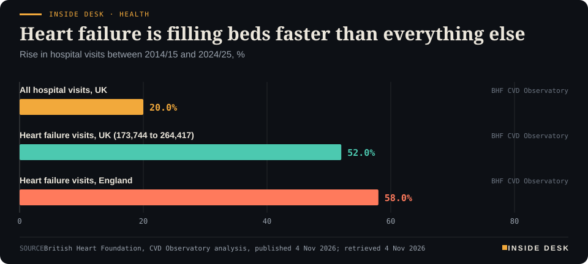
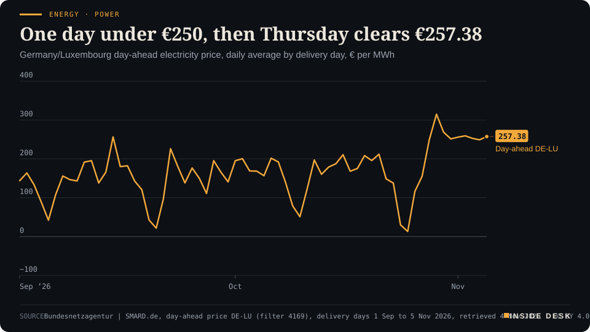
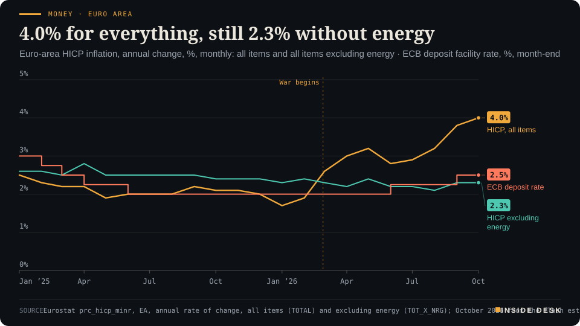

Inside Desk ePaper, Evening ePaper · Wed 4 Nov 2026
Wednesday, 4 November 2026Always free
Inside Desk
Evening ePaperPublished 17:30 CET · Berlin
Lead · Health & Care
Heart failure hospital visits in the UK rose 52% in a decade, more than twice as fast as hospital visits overall. The striking number is not the rise. It is where the diagnosis gets made.
UK hospital visits for heart failure hit a record 264,417 a year, and up to eight in ten diagnoses in England are made on the ward. Elsewhere: markets cheering a divided Washington, euro-area inflation at 4.0% but 2.3% without energy, Thursday's power back above €250, 310 drones at Ukraine's grid, and schools shut in Sardinia a day before the storm.
Heart failure is now found mostly in hospital beds, and the cheapest remedy for that is a doctor listening to a breathless patient's chest a few months sooner.
Geo-economics · p. 6
Markets & Macro · p. 7
Energy & Industry · p. 12
Climate & Weather · p. 19
The day in one sentenceHeart failure is now found mostly in hospital beds, and the cheapest remedy for that is a doctor listening to a breathless patient's chest a few months sooner.
ContentsInside Desk · Evening ePaper4 November 2026
UK hospital visits for heart failure hit a record 264,417 a year, and up to eight in ten diagnoses in England are made on the ward. Elsewhere: markets cheering a divided Washington, euro-area inflation at 4.0% but 2.3% without energy, Thursday's power back above €250, 310 drones at Ukraine's grid, and schools shut in Sardinia a day before the storm.
11 edition pieces · 11 desks · Published 17:30 CET, 4 November 2026
24 ePaper extras, added , 4 November. They appear only in the ePaper and carry their own time.
17:30 Evening ePaper, updated live until 22:30 with an “Updated” time and a Latest page
Sun 10:00 The Sunday Magazine
Berlin time. Every issue is free.
How to read it
Swipe, use the arrow keys or the page strip. Tap any headline for the reading view. Press / to search, t for contents, +/− to zoom. Download the PDF.
LatestInside Desk · Evening ePaper4 November 2026
Latest
Live: this page and the issue are updated until 22:30 Berlin time.
Markets: Wall Street's close is in, S&P 500 up 1.72%, chip index down 3.6%
Markets: Frankfurt's settled close is in, DAX up 2.22%, banks up 4.6%, Siemens Energy down 8%
LeadInside Desk · Evening ePaper4 November 2026
Health & Care · Lead · 4 min
Heart failure hospital visits in the UK rose 52% in a decade, more than twice as fast as hospital visits overall. The striking number is not the rise. It is where the diagnosis gets made.
On Wednesday the British Heart Foundation opened a new data platform, its CVD Observatory, and the first figure it put on the table was a record1. In 2014/15, UK hospitals recorded 173,744 visits for heart failure. In 2024/25 they recorded 264,417, a rise of 52%1. Over the same decade, hospital visits of every kind rose by 20%1. England’s rise was the steepest of the four nations, at 58%1.
Desk arithmetic: that is 90,673 more visits a year than a decade ago, or about 724 a day in 2024/25. The BHF says heart failure patients stay in hospital for around ten days, about twice the average stay1. Desk arithmetic again, and only roughly, since “around ten days” is an average: 264,417 visits at ten days each comes to about 2.6 million bed days a year, and the decade’s growth alone adds roughly 900,000.
It would be easy to read this as a story about hearts getting worse. Read the charity’s own explanation first. The rise, it says, reflects an ageing and growing population, “more people surviving heart attacks”, and stark health inequalities1. The middle item matters. A country that saves more people from heart attacks will have more people living with damaged hearts afterwards. Some of this line is the bill for a success, and you should not want it gone at the price of the success.
The number that is not in the headline. Further down the release is the figure that changes the argument. Research suggests that up to 80% of heart failure diagnoses in England are made in hospital, even though 40% of those patients had symptoms that should have triggered an earlier diagnosis1. That is the real story. The condition affects more than a million people in the UK1. Most of them are not found at a desk with a stethoscope and a referral form. They are found on a ward, already breathless and swollen.
The BHF’s chief scientific and medical officer, Professor Bryan Williams, put it plainly: “Most hospital visits for heart failure could be prevented”1. Too often, he told the Mirror, someone is only diagnosed “when they are already seriously unwell”2.
LeadInside Desk · Evening ePaper4 November 2026
Inside Desk · HealthHeart failure is filling beds faster than everything elseRise in hospital visits between 2014/15 and 2024/25, %

Bar chart: between 2014/15 and 2024/25, all UK hospital visits rose by 20%, UK hospital visits for heart failure rose by 52%, from 173,744 to 264,417, and heart failure visits in England rose by 58%, the steepest of the UK nations.
Source: British Heart Foundation, CVD Observatory analysis, published 4 Nov 2026; retrieved 4 Nov 2026 · CSV
The patient story the charity published is a case study in how that happens, not in negligence. Szandra Tar, 35, from Grangemouth, was fit and played volleyball1. Her symptoms began with shoulder aches at the end of 2024. By early 2025 she was out of breath after a short walk. A GP call in June 2025 ended with over-exercising or anxiety as the explanation1. By July she could not climb a flight of stairs, her face had swollen, and the swelling was put down to the heat or antibiotics1. …
Geo-economicsInside Desk · Evening ePaper4 November 2026
Geo-economics · 2 min
October's final purchasing managers' survey came in below the flash. The headline is still growth; the order book is the line to read.
The euro zone’s economy grew again in October, but more slowly than anyone had pencilled in. S&P Global’s final composite purchasing managers’ index came in at 51.7, down from 53.1 in September and below the flash estimate of 51.91. It is a four-month low. Anything above 50 means activity is still rising, so this is a slowdown, not a fall. The services index, the bigger part of the economy, slipped to 51.4 from 53.01.
The headline hides the line that matters. New orders “grew only marginally”, Reuters reports, after three months of stronger growth, and demand for services edged lower1. Export orders rose for a third month but lost pace1. Employment fell marginally, with services firms cutting and factories adding a few people1. Business confidence weakened for a third month in a row and stayed below its long-run average1.
The reason is printed on the invoices. Input-price inflation rose to a five-month high, and firms raised their own prices sharply, though slightly less than in September1. Chris Williamson, chief business economist at S&P Global Market Intelligence, linked it “largely” to higher energy prices, “which are squeezing customers’ budgets and discouraging spending”1. That is the war in the Gulf arriving on European invoices: the Strait of Hormuz, which usually carries a fifth of the world’s oil and gas shipments, was effectively closed after the war began in February, and a preliminary deal in June to reopen it collapsed within weeks; ships are still being hit2.
By country, France slipped back into contraction after a brief recovery in September; Germany, Italy, Spain and Ireland still grew, though all lost momentum1. …
Geo-economics · Short item · ePaper extra, added
Iran's list of 'non-compliant' vessels doubled on Monday. The new risk sits less in the strait than in the paperwork of every Gulf booking.
On Monday Iran’s Persian Gulf Strait Authority added 114 vessels to its “non-compliant” list, bringing it to 240, The Maritime Executive reported, as summarised by Forwarder News1. The list started at 45 ships in late August and stood at 77 by mid-September1. Iran says listed ships face “fines, detention, or confiscation” unless they clear passage with it and use the northern channel near its coast1.
The risk firm Orbital counts 118 crude tankers among the 240, plus LPG and LNG carriers, a few bulk carriers and now four containerships1. Seventy-two entries are linked to Gulf state companies such as ADNOC, Nakilat, QatarEnergy and Bahri1. The new clause that matters most: any vessel that cooperates with a listed ship, “via STS, transshipment, etc.”, will itself be added1.
Geo-economics · Brief · ePaper extra, added
The European Commission hosted Ukraine, the US, France, Germany, the UK, NATO and the World Bank in Brussels on Wednesday, with post-war reconstruction and “prosperity” on the agenda2. The figure behind the word: Ukraine faces a €70 billion hole in its 2027 finances, with just €4 billion pledged from outside the EU, bne IntelliNews reports1. Germany’s draft 2027 budget carries €11.6 billion for Ukraine, falling to €8.5 billion a year for 2028–2030 under the cabinet’s April plan1. The Bundestag’s budget committee holds its final session on 12 November and the final vote is on 27 November1. NATO allies were also €13 billion short of the €70 billion in military aid agreed for 2026, according to the Commission1. Prosperity plans are drafted in meeting rooms; they are paid for in budget committees, line by line.
Markets & MacroInside Desk · Evening ePaper4 November 2026
Markets & Macro · 2 min
Investors did not cheer a party; they cheered a divided government, and then sold the shares that needed one side to win.
The morning’s question was who won. By the afternoon, markets had answered a different one: how much can the winners actually do? The Dow Jones Industrial Average opened 997.76 points, or 1.93%, higher at 52,784.48 on Wednesday, the S&P 500 1.14% higher at 7,655.43 and the Nasdaq Composite 1.07% higher at 25,643.361. Reuters put the mood plainly: investors were betting that “a divided Washington” after the Democrats’ sweep of Congress could limit sharp policy shifts1.
Frankfurt had already started. At 15:41 CET the DAX was 2.13% higher at 26,416.42 points, after opening at 25,888.93 and touching a low of 25,876.822. Since Monday the index is up 2.38%, and since January 7.65%2. The day’s best performers were not election trades at all: Heidelberg Materials was up 9.96% and Continental 5.98%, both on quarterly figures, with Commerzbank up 5.95%2. At the bottom sat Siemens Energy, down 4.22% at €124.302.
Inside the rally, a sorting. Before New York opened, the shares that had needed one side to win were already moving. Data-centre operators slipped on the prospect of tougher congressional oversight of the AI build-out; defence names such as Northrop Grumman fell 5% on doubts that a $1.5 trillion budget request will pass untouched; prison operators GEO Group and CoreCivic lost 6.7% and 5.2%3. Solar and wind companies rose, and hospital operators and health insurers gained3. …
Markets & Macro · Short item · ePaper extra, added
A quarter that matched the forecast was not the news. The lower full-year guidance and the empty finance chair were.
On a morning when most of Wall Street went up, one payments processor went sharply the other way. Fidelity National Information Services, the bank-software and payments group known as FIS, fell 17.2% in pre-market trading to $32.30, close to its 52-week low of $32.092. Its 52-week high was $68.372.
The quarter itself was ordinary. Adjusted earnings of $1.61 a share matched the consensus of $1.60, and revenue of about $3.43 billion was in line with forecasts2. The trouble sat in the two lines below it.
The year got smaller. FIS now expects adjusted earnings of $5.82 to $5.89 a share for 2026, down from $6.15 to $6.24, and revenue of $13.445 to $13.505 billion, down from $13.630 to $13.695 billion1. Desk arithmetic: at the midpoints that is about 5.5% off earnings and 1.4% off revenue. Pro forma revenue growth is now put at 3.1% to 3.6%, from 4.5% to 5.0%1.
The finance chair empties tomorrow. Chief financial officer James Kehoe steps down on 5 November and stays as a non-executive adviser until March 2027; chief accounting officer Alexandra Brooks becomes interim CFO1. The company also said meaningful share buybacks will resume only once gross leverage falls to about 2.8 times1.
Investing.com notes that analysts had already made 21 downward earnings revisions in the 90 days before the report2. Expectations had been lowered, and the shares still fell. That is the quiet lesson: a forecast you meet is only half the story if the next one you write is lower. Read the guidance before the headline. Nothing here is investment advice.
Markets & MacroInside Desk · Evening ePaper4 November 2026
Markets & Macro · Short item · ePaper extra, added
This evening's Markets note was written at 15:41. The settled close is a little higher, and the sorting inside it is sharper.
The evening’s Markets note left the DAX at 15:41, up 2.13%. Xetra has since closed it 2.22% higher at 26,437.67 points1. At its best the index stood near 26,542, only 78 points short of its record from late August, and the MDax closed 1.41% higher at 31,178.271. The Stoxx Europe 600 ended 1.82% higher at 657.40, its highest since 26 August and its steepest one-day gain since 12 June2.
The sorting the afternoon hinted at held to the bell. Euro Stoxx banks rose 4.6%, the most since early April; Morningstar’s Michael Field said a Democratic Congress limits Washington’s ability to impose “requirements or sanctions” on European banks in the US2. Orsted gained 4.6% and Nordex 4.8%2. On the other side, Siemens Energy shed 8% and Infineon, ASML and Soitec fell between 3.4% and 11.8%, on the prospect of stricter oversight of AI2. Heidelberg Materials closed 9.6% higher on its quarter, and Novo Nordisk 5.6% on a raised forecast2. Brent fell 8%, and oil shares with it2.
Dekabank’s Joachim Schallmayer read the vote as a signal that Trump’s policy is “nicht grenzenlos durchsetzbar”, not limitlessly enforceable, though he expects no dramatic change of course1. A close near a record is a mood; the invoices arrive later. Nothing here is investment advice.
Markets & Macro · Short item · ePaper extra, added
New York read the same vote as Frankfurt did: relief at the top of the market, a harder look at the companies that pour the concrete for AI.
New York has closed, and it agreed with Frankfurt. The S&P 500 rose 1.72% to 7,698.86, the Nasdaq Composite 1.77% to 25,821.13, and the Dow 2.97%, or 1,534.89 points, to 53,321.611. Consumer discretionary led with a 5% gain; energy fell 5.1%1.
The sorting inside the number is the story. Amazon rose 7% and Alphabet 3.8%, while the Philadelphia semiconductor index fell 3.6% to a six-month low and the data-centre operators Hut 8 and IREN lost 24% and 12%1. AMD, which forecast faster growth for 2027 overnight, still closed down 0.4%1. Defence names fell on the prospect of a tougher road for the $1.5 trillion budget request, and a solar fund climbed 6.1%1. Citi’s Scott Chronert put it plainly: change the pace of the data-centre buildout and you “change the fundamental trajectory” for its suppliers1.
Gridlock is not a policy, but markets often price it as a relief. The order books of the suppliers will say more than tonight’s close. Nothing here is investment advice.
Markets & Macro · Brief · ePaper extra, added
Heidelberg Materials was the best performer in the DAX on Wednesday afternoon, up 9.96% at €172.15 at 15:41 CET2. The reason was a quarter without fireworks. Third-quarter revenue rose 10% to €6,413 million and the result from current operations 9% to €1,281 million, driven, the company says, by Europe, North America and “uncompromising” cost and price management1.
The full-year range of €3.40 to €3.65 billion was confirmed, not raised1. What was new is housekeeping: the cost programme will beat its €500 million target this year, and a further €300 million of savings is planned, in nearly equal parts in 2027 and 20281. Cement, quarries and asphalt plants rarely make headlines. On a day of election trades, they made the top of the table. Nothing here is investment advice.
Politics & InstitutionsInside Desk · Evening ePaper4 November 2026
Politics & Institutions · Podium vs Print · 2 min
The president told Democrats they will want to work with him or face his veto. The Constitution prints the number that decides who needs whom, and it cuts both ways.
Podium
“going to want to work with me. Otherwise I'd just veto everything and they're not going to want that”
Donald Trump, president of the United States, in an interview with CBS News, Wednesday 4 November 2026, the morning after the midterm elections
Printtwo thirds
A vetoed bill becomes law only "if approved by two thirds" of each House.
US Constitution, Article I, Section 7, In force since 1789
The podium. The morning after his party lost both chambers, Donald Trump told CBS News that Democrats are “going to want to work with me. Otherwise I’d just veto everything and they’re not going to want that”1. Separately he told Fox News that “a part of it was Iran”, meaning the war and the petrol prices that followed it4. The veto line is the one to check, because it rests on a number.
The print. The Constitution prints that number. A bill the president returns unsigned becomes law only if, after reconsideration, it is “approved by two thirds” of each House2. CBS News projects at least 54 Democratic senators in January, with Alaska and Mississippi still uncalled1. In the House, Democrats had a 228–139 majority on Wednesday morning, with 68 races still uncalled3. Desk arithmetic: with all 100 senators voting, an override needs 67, so Democrats would need 13 Republican votes; with all 435 House seats filled and voting, it needs 290, which is 62 more than the 228 Democratic seats called so far.
The gap. On the arithmetic, the podium is right: a 54-seat Senate cannot override a veto alone. But the same article of the Constitution also prints the other half of the bargain. “No Money shall be drawn from the Treasury, but in Consequence of Appropriations made by Law,” it says in Section 92. Spending laws start in Congress, and from January Congress means Democrats. A president who vetoes everything also vetoes the budgets his own departments run on. The veto stops things; it does not pay anybody.
What it means for you. Both sides now hold a brake, and neither holds the whole steering wheel. That is not gridlock by design so much as the machinery asking for signatures from two places at once. The useful thing to watch is not the next speech but the first appropriations bill: who drafts it, how many Republicans vote for it, and whether it comes back signed. Speeches say “everything”. Bills come one at a time, with page numbers.
Politics & Institutions · Short item · ePaper extra, added
Speaker Johnson will not run to lead House Republicans again. The next dates are internal votes, which is how power changes hands when it changes quietly.
Mike Johnson told his staff on a call on Wednesday morning that he will not run to lead House Republicans in the next Congress, according to four sources on the call quoted by NBC News1. He has served two terms as speaker since Kevin McCarthy was ousted in 20231. Republicans hold their internal election for minority leader next week, on 10 November1.
On the other side of the aisle, Hakeem Jeffries is expected to become the first Black speaker of the House when the new Congress convenes on 3 January2. Democrats had a 228–139 majority on Wednesday morning, with 68 races still uncalled2. “This is not a partisan moment. This is a patriotic one,” Jeffries told supporters2.
In the Senate, John Thune, the outgoing majority leader, wrote that Republicans “will not stand idly by” and that “thankfully, we still have President Trump in the White House”3. Chuck Schumer, who will lead the new majority, offered Americans five words: “Relief is on the way”3.
Those are the speeches. The dates are more useful: a caucus vote on 10 November, a swearing-in on 3 January, and then committee chairs, budgets and staff. A change of majority is mostly paperwork: who holds the gavel, who signs the subpoenas, who sets the agenda for each morning’s sitting. That is less exciting than election night, and it is the part that lasts two years.
Politics & InstitutionsInside Desk · Evening ePaper4 November 2026
Control of the Senate is settled, but two seats are not. CBS News still rated Alaska and Mississippi as toss-ups on Wednesday morning1. In Alaska, Republican Senator Dan Sullivan and Democrat Mary Peltola are in a tight race that CBS says could take some time to count1. It was shaken up by allegations that operatives linked to Peltola recruited a second candidate also called Dan Sullivan; her team denied it1. The Trump administration had sued to block certification if the incumbent got fewer votes than Peltola, and a federal judge dismissed that suit on Sunday1. In Mississippi, Senator Cindy Hyde-Smith and Democrat Scott Colom are in what CBS calls an “unexpectedly close” race1. Neither result changes who runs the chamber. Both will tell you something about whether the slow, dull count is still trusted to finish the job.
Psychology & BehaviourInside Desk · Evening ePaper4 November 2026
Psychology & Behaviour · 2 min
A study of fourteen years of posts and newsletters from US lawmakers finds attacks on the other party paid off online, while bipartisan work and help for constituents did worse than average. The authors call it a mirage.
The document. “Measuring Partisanship and Representation in Online Congressional Communications”, by Michael Kistner of the University of Houston and five co-authors, in the American Political Science Review1. It covers members of the US Congress from 2009 to 2022: about 4.7 million posts on Twitter, 2.4 million on Facebook and 184,000 official email newsletters1. Desk arithmetic: roughly 7.3 million messages in all. On the day after a midterm, it is worth reading what the campaign looked like when nobody was campaigning.
The line. On Twitter, negative partisan attacks received 60% more likes, 80% more retweets and 79% more replies than an average post by the same politician1. On Facebook, they drew 86% more shares and 93% more comments1. Messages about bipartisan work or services for the local district did worse than the typical post, and so did claiming credit for something government had delivered1.
The lines around it. Attacks made up about five to ten per cent of messages in the early years and nearly twenty per cent by the end of 20221. Language-based partisanship rose across all three channels from 20111. Measured this way, Democratic rhetoric showed no statistically significant trend over the decade, while Republican rhetoric moved strongly towards the extremes1. The sharpest rise in Democratic attack messages came after the 2016 election; the Republican spike followed 20201. Messages about funding for the district or helping constituents did not keep pace1.
The caveats. The data stop in 2022, before the rise of newer, more partisan platforms1. Messages were classified by language models trained on a hand-coded subset; the authors checked the scores against roll-call votes, fundraising and bill sponsorship, and they lined up well1. Engagement measures what a polarised online audience rewards, not what the electorate wants.
Psychology & Behaviour · Short item · ePaper extra, added
Two political scientists asked people to rate themselves on both scales. Binary sex stopped predicting political participation once they did.
Election nights are narrated in blocs: how men voted, how women voted. A paper by Claire Gothreau of Lebanon Valley College and Amanda Friesen of the University of Western Ontario, in Politics and the Life Sciences, suggests that the bloc hides most of the story1. They asked people to rate, on separate continuous scales, how masculine and how feminine they feel1.
Researchers at UCLA and the University of Washington scanned 47 autistic and 45 non-autistic young people aged 8 to 15 while artificial grass and scratchy wool were rubbed on their forearm1. Before some blocks the screen said “feel”; before others it said “reporter”, the cue to describe the texture objectively1. In the reporter blocks, autistic youth showed less activity in areas that register touch and in the insula, and even in the auditory cortex1. Their own ratings of how bad it felt did not change significantly1.
It was one short training session in an MRI scanner, and the task was hard for younger children1. “This type of emotion regulation strategy could be incorporated into interventions and tested,” said senior author Shulamite Green1. A small, testable tool, described without hype: that is how help usually arrives.
Energy & IndustryInside Desk · Evening ePaper4 November 2026
Energy & Industry · 2 min
Wednesday's dip lasted exactly one delivery day; Thursday's auction puts the dear hours back where they hurt, at teatime.
This morning’s relief lasted one delivery day. Today’s day-ahead auction set an average of €257.38 per megawatt hour for Germany and Luxembourg for delivery on Thursday 5 November, the desk’s average of the 24 hourly results SMARD published this afternoon1. That is €8.39 above Wednesday’s €248.99, which had been the first day under €250 since 28 October1.
Energy · PowerOne day under €250, then Thursday clears €257.38Germany/Luxembourg day-ahead electricity price, daily average by delivery day, € per MWh

Line chart of the daily average German-Luxembourg day-ahead electricity price from 1 September to 5 November 2026, in euros per megawatt hour. It falls to €30.12 on Saturday 24 October and €13.12 on Sunday 25 October during the storm, then climbs to €314.85 on Thursday 29 October, the highest daily average of 2026 so far. The six delivery days from 29 October to 3 November all stayed above €250, Wednesday 4 November dipped to €248.99, and the latest value is €257.38 for delivery on Thursday 5 November.
Source: Bundesnetzagentur | SMARD.de, day-ahead price DE-LU (filter 4169), delivery days 1 Sep to 5 Nov 2026, retrieved 4 Nov 2026 · CC BY 4.0 · CSV
The shape matters more than the average. Thursday’s night is cheaper than Wednesday’s: the hour from midnight cleared €196.97, the lowest single hour since Wednesday 28 October1. The evening is dearer: €349.36 for the 17:00 hour and €346.14 for 18:00, the highest hourly prices since Thursday 29 October1. …
Energy & Industry · Short item · ePaper extra, added
The industry's estimate promised a big fall in US crude stocks. Wednesday's government figures found a small one, and the real squeeze in the middle distillates.
The American Petroleum Institute’s figures, cited by market sources on Wednesday, showed US crude stocks falling by 5.27 million barrels in the week to 30 October; eight analysts polled by Reuters had expected a rise of about 880,0002. The government’s own count arrived at 16:30 CET today. The US Energy Information Administration put the fall in commercial crude stocks at 865,000 barrels, to 409.8 million1.
That is still a draw, and still the opposite of the forecast. …
Energy & Industry · Brief · ePaper extra, added
Texas power producer Vistra fell 10% on Wednesday morning after Democrats won Congress and Gina Hinojosa won the Texas governor’s race on a promise to halt new data centres; Constellation Energy lost 6% and GE Vernova 9%1. In Europe the wind went the other way: Nordex rose 6.5%, Vestas 3.6% and SMA Solar 7.8%2.
The ledgers moved less than the prices. Vistra had hedged about 94% of its expected 2027 generation as of 3 August, and reports on Thursday1. GE Vernova’s third-quarter orders rose 96% organically1. Turbines and contracts take years; share prices took one morning. Nothing here is investment advice.
Money, FX & CommitteesInside Desk · Evening ePaper4 November 2026
Money, FX & Committees · 2 min
Prices across the euro area rose at their fastest pace in three years in October. Strip out energy and the rate has not moved since September.
Euro-area inflation reached 4.0% in October, up from 3.8% in September, according to Eurostat’s flash estimate published this morning1. It is the first time the rate has hit 4% since September 2023, when it stood at 4.3%2. The figure was in line with what economists polled by Reuters had expected2.
Money · Euro area4.0% for everything, still 2.3% without energyEuro-area HICP inflation, annual change, %, monthly: all items and all items excluding energy · ECB deposit facility rate, %, month-end

Line chart since January 2025 of euro-area HICP inflation, all items and excluding energy, with the ECB deposit rate. Both inflation lines run between 1.9% and 2.8% through 2025. From March 2026 the all-items line climbs, to 3.2% in May and August, 3.8% in September and 4.0% in October 2026, the latest value, from Eurostat's flash estimate. Inflation excluding energy stays between 2.1% and 2.4% throughout 2026 and is 2.3% in October 2026, the latest value, unchanged from September. The deposit rate falls from 3.00% in January 2025 to 2.00% from June 2025, rises to 2.25% in June 2026 and to 2.50% in September 2026, where the ECB left it on 29 October 2026.
Source: Eurostat prc_hicp_minr, EA, annual rate of change, all items (TOTAL) and excluding energy (TOT_X_NRG); October 2026 from the flash estimate of 4 Nov 2026 (estimated) (CC BY 4.0) · ECB, key ECB interest rates, deposit facility, month-end, unchanged on 29 Oct 2026 · retrieved 4 Nov 2026 · CSV
One line did nearly all the climbing. Energy prices were 20.8% higher than a year earlier, up from 18.9% in September; a year ago, in October 2025, they were 0.9% lower1. Everything else barely moved. …
Money, FX & Committees · Short item · ePaper extra, added
While markets argued about what a new Congress might spend, the department that borrows the money published a table in which almost nothing moved.
The US Treasury will sell $125 billion of notes and bonds next week to refund about $97 billion maturing on 15 November, raising about $28 billion of new cash from private investors1. The pieces are a $58 billion 3-year note on Monday 9 November, a $42 billion 10-year note on Tuesday 10 November and a $25 billion 30-year bond on Thursday 12 November, each auctioned at 13:00 New York time, 19:00 CET1.
The headline is the absence of one. Treasury said it expects to keep nominal coupon and floating-rate auction sizes unchanged “for the next several quarters”1. Its table for November to January shows the same monthly sizes as August to October: $69 billion of 2-year notes, $70 billion of 5-year and $44 billion of 7-year1. TIPS sizes are held too1.
The changes are in the plumbing. From March 2027 the 7-year note becomes a quarterly new issue with two reopenings, like the 10-year1. Treasury plans buybacks of up to $70 billion of older securities for liquidity support and up to $25 billion for cash management this quarter1. It assumes an $850 billion cash balance at the end of December, but says the account could peak at $1.025 trillion, plus or minus $50 billion, in late November and late January1.
Bond markets, meanwhile, were reading the election. The 10-year yield slipped more than a basis point to 4.933% on Wednesday; JPMorgan’s traders said Wall Street is focusing on “reduced deficit spending” after the midterms2. That may or may not arrive. What has arrived is a borrowing calendar with dates and amounts, and the next one is due on 3 February 20271. Nothing here is investment advice.
Money, FX & CommitteesInside Desk · Evening ePaper4 November 2026
Money, FX & Committees · Brief · ePaper extra, added
The dollar index fell to a one-month low on Wednesday and was last at 101.47; the pound rose 0.5% to $1.34711. By late morning the euro had climbed more than 0.6% towards $1.1260–1.1280, the top of its four-week range, helped by this morning’s 4.0% euro-area inflation figure2. Convera’s George Vessey said investors increasingly see the election as “a constraint on future policy rather than a fundamental challenge” to US growth1.
Sterling’s next test is domestic. Ebury’s Matthew Ryan expects a quarter-point Bank of England rise on Thursday on a 7–2 vote, and calls swap pricing of four rises within twelve months “far too excessive”3. A 6–3 split, he writes, would be the pound’s bearish risk3. Nothing here is investment advice.
Ordinary & Inherited LifeInside Desk · Evening ePaper4 November 2026
Ordinary & Inherited Life · 2 min
Almost every grid operator in Germany has now posted its provisional fees for 2027. For a typical household the bill for the wires barely moves, and the reason it barely moves still needs a vote.
Your electricity bill has a part nobody advertises: the fee for the wires. It is set not by your supplier but by the local grid operator, and this autumn those operators have been publishing their provisional numbers for 2027. The data firm ene’t, which collects them, said on Wednesday that it now has fees from 751 electricity grid operators covering 99.97% of the country1. That makes it the first nearly complete picture of what the wires will cost you next year.
The ledger.
- Household using 4,000 kWh a year: grid costs €357.24 in 2026, €359.56 provisional for 2027, up 0.65%1.
- Household using 1,500 kWh: €191.96 to €193.85, up 0.99%1.
- Gas household using 7,000 kWh: €238.63 to €244.08, up 2.28%1.
- Gas household using 20,000 kWh: €542.21 to €555.66, up 2.48%1.
- Desk arithmetic: that is €2.32 more a year for the larger electricity household, €1.89 for the smaller one, and €5.45 and €13.45 for the two gas households. These are national averages; your own operator may sit well above or below them.
The line that holds it up. At the top of the system, the four transmission operators say their average fee will rise from 2.86 to 3.54 cents per kWh in 20272. That figure already assumes a federal subsidy of €5.525 billion from the climate and transformation fund, which the cabinet approved in early September and which is about €1 billion smaller than this year’s2. Without it, they say, the fee would rise to 6.52 cents2. The law is not yet passed. If there is no legal certainty by 7 December, the operators expect the final transmission fees to go up accordingly2.
What it means for you. Nothing changes on your bill this week, and the grid is only one line on it. Two dull things are worth doing. First, keep the letter your supplier sends before January and look for the “Netzentgelt” line rather than the headline price. Second, compare that line with this year’s: a switch decided on the actual numbers beats one decided on a headline.
The constructive point is that a nearly flat grid bill is not luck. It is a subsidy, a regulator and a few hundred operators filing tables on time. Nothing here is investment advice.
Ordinary & Inherited Life · Short item · ePaper extra, added
Saxony-Anhalt's statistics office marked the start of the heating season with a reminder that 'energy prices' is not one number.
Ask whether heating has got dearer and the honest answer is: it depends what you burn. Saxony-Anhalt’s statistics office published its October figures for household energy on Wednesday, to mark the start of the heating season1.
Taken together, electricity, gas and other fuels cost 0.8% more than in September and 3.6% more than in October 2025, putting the index at 151.61. Underneath that average, the picture splits. …
Ordinary & Inherited Life · Brief · ePaper extra, added
Stiftung Warentest has compared 183 buildings insurance tariffs from 69 providers, all including “Elementarschutz”, the add-on for floods, backflow and other natural hazards1. Premiums rose 4.2% in 2026 from building costs and wages alone, the testers say, and the spread is wide: for their model house in Bremen, very good cover starts at €695 a year, while another very good tariff costs €2,8221. In Regensburg, very good cover starts at €6351.
56 of the 183 tariffs were rated poor; weak tariffs, the testers say, do not cover damage caused by gross negligence, or not adequately1. Flood cover is still missing on nearly half of all residential buildings, especially in old contracts1. If you own a house, the dull task this week is to find your policy and check for that one word.
Tech & ComputeInside Desk · Evening ePaper4 November 2026
Tech & Compute · 2 min
The security firm says a human can now stop a misbehaving agent, keep it from relaunching and cut its network access. That this is a product launch says a lot about how agents were being deployed.
“Everyone is building AI agents, but they never had the off button, and now they do,” CrowdStrike’s chief executive George Kurtz told CNBC on Tuesday2. Read that sentence twice. It is meant as a sales line. It is also a confession on behalf of an industry: software that acts on its own, with system-level access, has been going into companies without a dependable way to halt it.
What was launched. The “AI Kill Switch” sits in CrowdStrike’s Falcon Guardian product, announced at its Fal.Con Europe conference in Barcelona and available immediately1,2. If an agent breaks out of its intended behaviour, an authorised administrator can terminate it, block it from launching again on a host or group of hosts, and cut off its enterprise network access1. Every action is recorded in an audit trail1. The company’s own fine print matters: termination works first at the gateway, and only “soon” on the endpoint itself1.
Why it is needed at all. The press release explains the problem plainly. Agents “chain steps, hit obstacles, and can take actions no one authorized, even when no adversary is involved”1. That last clause is the important one. The risk being sold against is not only the hacker; it is the helper that misreads its instructions. Kurtz compares the switch to an airbag: a safeguard you need even when the system is designed to work2.
The contrarian reading. Strip away the launch language and what is on offer is the most traditional control in IT: a named person, a stop command, a block on restarts and a log. That is the right answer, and it is a dull one. Kurtz says enterprise customers told Anthropic, “We need CrowdStrike before we can deploy AI”2. Whatever the vendor, the demand is healthy: buyers asking for brakes before they buy the engine.
For you. If your employer is rolling out agents, the useful questions are the boring ones. Who can stop this agent? …
Tech & Compute · Short item · ePaper extra, added
Google's November Android bulletin fixes a critical flaw that needs no tap from you. The fix exists; whether it reaches your phone depends on the maker.
Google’s November security bulletin for Android includes a critical flaw, CVE-2026-58868, that could let an attacker run code on a phone remotely without any action by its owner1. It affects Android 14 to 171. As of Wednesday, Google reported no attacks exploiting the flaws in the bulletin, and none was in the US cyber agency CISA’s catalogue of exploited vulnerabilities1.
Tech & Compute · Brief · ePaper extra, added
BTCPay Server, open-source software merchants use to accept Bitcoin, says attackers stole Bitcoin and Litecoin from hot wallets on servers running version 2.4.1 or earlier1. The attackers used a different method to exploit a vulnerability fixed in 2.4.2, released on 7 August1. Servers already on 2.4.2 or later when the project warned on 1 November showed no impact1.
“We wish we had done more to reach users still running older versions,” the project writes; it also asked hosting providers to take instances offline1. Its advice is sober: updating alone cannot remove access an attacker may already have, so affected operators should sweep funds to a new wallet with a new seed and rebuild on a fresh server1. Funds whose keys sat off the server, including hardware wallets, were unaffected1. The patch was the cheap part. Installing it was the control.
Health & CareInside Desk · Evening ePaper4 November 2026
A survey of more than 1,000 German cancer-ward nurses finds the rules on chemotherapy drugs are clear. Following them is the part that slips.
The drugs that kill cancer cells do not ask whose cells they touch. A nationwide survey of more than 1,000 nurses in German oncology wards and specialist practices, published in the journal Pflegewissenschaft, finds that the people handing those drugs out are often less protected than the rules require1.
About a quarter had not done any of the mandatory yearly refresher courses on handling cytostatics, which can cause cancer, mutations and harm to fertility1. More than 40% said they did not know their own workplace’s safety guidelines, and only about 60% used the special gloves meant for these drugs1. In none of the clinics where respondents worked were all recommended measures fully in place1.
Many reported skin contact during infusions, because closed transfer systems were not used enough or infusion sets were faulty; wipe tests to detect contamination were often missing1. Several nurses described rashes, headaches, dizziness, hair loss and changes in taste after shifts, symptoms that can point to exposure1.
The researchers are not asking for new science. They want stricter legal duties for clinics and practices, proper equipment, regular training and consistent use of TRGS 525, Germany’s existing technical rule for hazardous substances in healthcare1. That is the dull part, and it works: a rule only protects the hands that actually wear the glove.
Health & Care · Brief · ePaper extra, added
Researchers at UCL and Imperial College London measured 233 blood metabolites in more than 6,000 British civil servants from the Whitehall II study, then followed their health for up to 20 years1. An ultra-processed diet left a recognisable pattern: less omega-3 and “good” HDL cholesterol, more of the triglycerides that clog arteries1.
That pattern accounted for 51% of the diet’s link with later cardiovascular disease and 43% of its link with type 2 diabetes, even after allowing for sugar, fat and salt1. The highest third of ultra-processed eaters had a 17% higher heart-disease risk than the lowest third1.
It is observational, so it cannot prove cause, the authors say1. But it arrives while the UK’s nutrition advisers are weighing whether processing itself belongs in the guidance1. Evidence before rules: the right order.
Security & OrderInside Desk · Evening ePaper4 November 2026
Security & Order · 2 min
Russia's overnight attack aimed at Ukraine's power grid again, six days before talks in Abu Dhabi. The defence that counts is the repair crew as much as the interceptor.
Russia launched 310 strike and decoy drones at Ukraine between 18:00 on Tuesday and Wednesday morning (Kyiv time), Ukraine’s Air Force said1. Among them were 81 jet-powered Shaheds1. By 08:00 Kyiv time, air defences had shot down or neutralised 272, including 64 of the jet-powered ones1. Drones still struck 19 locations, and debris fell at 15 more1. Desk arithmetic: 272 of 310 is about 88%; 38 got through or went unaccounted for, and 17 of those were jet-powered.
The targets were the grid. Energy sites were hit in Zhytomyr, Ternopil and around Rivne; most of Kovel lost electricity; two men were injured at an industrial site in Dnipro1. By morning the energy ministry reported people without power in Vinnytsia, Zhytomyr, Zaporizhzhia, Kirovohrad, Kharkiv and Kherson oblasts, with emergency blackouts across Kyiv and the surrounding region for a second day2. Ukraine’s nuclear plants are running at reduced capacity until the damaged networks are repaired, and DTEK said on Tuesday that a massive missile and drone barrage had stopped generation at three of its thermal plants2.
Then the dull machinery started. Kyiv’s water, lost on Tuesday, was partly restored on Wednesday morning2. Kovel’s water utility switched to backup power and published hours when taps would run1. Zhytomyr announced warming points, where residents can heat up, charge phones and get online, would open at 09:00 if power was not back1. “Repair crews are working around the clock,” the ministry said2.
The air-defence arithmetic is the strained part. Zelenskyy said in Berlin on Tuesday that Ukraine has “great difficulties in air defence”, citing a major shortage of PAC-2, PAC-3 and IRIS-T missiles, bne IntelliNews reports3. He wants an energy ceasefire on both sides as a first aim for the Abu Dhabi talks on 10–11 November3.
For you, the lesson is not drama but logistics. …
Security & Order · Short item · ePaper extra, added
In the Strait of Hormuz, the confirmed list and the claimed list are not the same list. Read the one with times and coordinates.
At 20:00 CET on Tuesday, a 23-year-old supertanker was hit in its engine room by two unknown projectiles 14 nautical miles north-east of Limah, in Omani waters1. The maritime security firm Vanguard Tech named it as the Barbados-flagged VLCC Grit1. No crew were hurt; the damage was not yet known1. The ship appears on the blacklist kept by Iran’s Persian Gulf Strait Authority1.
Security & Order · Brief · ePaper extra, added
Britain and France will lead Exercise Koalicja in Poland from 9 to 22 November, the first major exercise of the Multinational Force Ukraine, the military arm of the coalition of the willing1. About 2,800 troops from 11 nations take part: Belgium, Estonia, France, Germany, Lithuania, the Netherlands, Poland, Spain, Sweden, Türkiye and the UK, which sends 300 personnel, RAF Typhoons and a Voyager tanker1. The force would move into Ukraine only once fighting has stopped and at Kyiv’s request, and it “would not carry out peacekeeping or ceasefire-monitoring duties”, the UK Ministry of Defence says1. What it rehearses is dull and essential: moving, protecting and supplying troops, and, from Istanbul, clearing mines so merchant ships can return to Ukraine’s ports1. Peace, when it comes, will need lorries, fuel and minesweepers on the first morning.
Climate & WeatherInside Desk · Evening ePaper4 November 2026
Climate & Weather · 2 min
A slow Mediterranean storm is settling over Sardinia and the French coast. The most useful thing about Wednesday was how early the paperwork arrived.
Sardinia’s civil protection has issued a red alert, its highest level of hydrogeological risk, for the east of the island, from the Sarrabus through Ogliastra and the Baronia to Gallura1,2. It runs until 23:59 on Thursday 5 November; the rest of the island is on yellow1. The regional outlook quoted by L’Unione Sarda expects scattered strong thunderstorms between Ogliastra and the Baronie, with rainfall totals “locally up to very high” and gale-force gusts in the storms2.
What happened next is the part worth noticing. By Wednesday, a day ahead, the mayors of Olbia and Nuoro had signed orders closing schools for Thursday1. Olbia also shut public offices that receive visitors, keeping minimum services, plus its cemeteries, its urban park and its sports grounds1. Nuoro closed schools of every kind, university sites, the library, museums, nurseries, parks and outdoor sports grounds1. Lanusei and Castiadas were heading the same way, and ANSA expected the list to grow1. In Cagliari, on yellow, the city published the streets where you should not park in case of flooding, and a car park to move to instead2.
Across the water, the same pattern is a “durable Mediterranean episode”, in Météo-France’s words, on the coast from Hérault to Var3. Var, Gard, Bouches-du-Rhône, Hérault and both Corsican départements are on yellow for storms from Wednesday to Friday 6 November3. The forecaster expects the rain to intensify on Wednesday evening and continue all of Thursday, with large totals, especially on Corsica’s eastern side, and says a higher rain-flood warning is possible3.
None of these notices is dramatic, and that is the point. A colour code, a mayor’s signature and a list of streets do not stop water. They move people out of its way before it arrives. If you are travelling to Sardinia, Corsica or the Provence coast on Thursday, check the local warnings before you set off, not on the road.
Climate & Weather · Short item · ePaper extra, added
Five days before COP31, the WHO puts prices on six unglamorous measures and finds they could prevent 1.6 million deaths a year.
The World Health Organization published a report on Wednesday that does something climate summits rarely do: it costs the boring things1. Its six measures are heat-health warning systems, climate-resilient drinking water, basic sanitation, hygiene and handwashing facilities, cleaner household fuels for cooking and heating, and efficient fossil-fuel pricing1.
Scaled up worldwide, the WHO models, they could prevent 1.6 million deaths a year, about one in every 40 deaths, and avoid 16.7 billion tonnes of CO₂, equal to 31% of global annual emissions excluding land use1. Across five of the actions, every dollar invested is estimated to return $241.
The standout is the cheapest. …
Climate & Weather · Brief · ePaper extra, added
COP31 runs in Antalya from 9 to 20 November, with the leaders’ summit on 11 and 12 November1. Most pre-summit news is about halls and visitor numbers: about 100,000 expected in the negotiating Blue Zone, 1.5 million in the public Green Zone1.
The more useful item is a platform. Türkiye’s industry ministry, the EBRD and the World Bank’s IBRD and IFC will unveil an industrial decarbonisation investment platform for iron and steel, aluminium, cement and fertiliser1. It aims to back more than €5 billion of investment by 2030 and cut 20 million tonnes of CO₂-equivalent a year, starting with $250 million from the Climate Investment Funds and €5.7 million from the EU1. The EIB, Asian Development Bank and Islamic Development Bank are due to sign up at the summit1.
Speeches end on 20 November. Loan books keep running.
Charts and dataInside Desk · Evening ePaper4 November 2026
Charts and data
Energy · PowerOne day under €250, then Thursday clears €257.38Germany/Luxembourg day-ahead electricity price, daily average by delivery day, € per MWh
Line chart of the daily average German-Luxembourg day-ahead electricity price from 1 September to 5 November 2026, in euros per megawatt hour. It falls to €30.12 on Saturday 24 October and €13.12 on Sunday 25 October during the storm, then climbs to €314.85 on Thursday 29 October, the highest daily average of 2026 so far. The six delivery days from 29 October to 3 November all stayed above €250, Wednesday 4 November dipped to €248.99, and the latest value is €257.38 for delivery on Thursday 5 November.
Source: Bundesnetzagentur | SMARD.de, day-ahead price DE-LU (filter 4169), delivery days 1 Sep to 5 Nov 2026, retrieved 4 Nov 2026 · CC BY 4.0 · CSV
Money · Euro area4.0% for everything, still 2.3% without energyEuro-area HICP inflation, annual change, %, monthly: all items and all items excluding energy · ECB deposit facility rate, %, month-end
Line chart since January 2025 of euro-area HICP inflation, all items and excluding energy, with the ECB deposit rate. Both inflation lines run between 1.9% and 2.8% through 2025. From March 2026 the all-items line climbs, to 3.2% in May and August, 3.8% in September and 4.0% in October 2026, the latest value, from Eurostat's flash estimate. Inflation excluding energy stays between 2.1% and 2.4% throughout 2026 and is 2.3% in October 2026, the latest value, unchanged from September. The deposit rate falls from 3.00% in January 2025 to 2.00% from June 2025, rises to 2.25% in June 2026 and to 2.50% in September 2026, where the ECB left it on 29 October 2026.
Source: Eurostat prc_hicp_minr, EA, annual rate of change, all items (TOTAL) and excluding energy (TOT_X_NRG); October 2026 from the flash estimate of 4 Nov 2026 (estimated) (CC BY 4.0) · ECB, key ECB interest rates, deposit facility, month-end, unchanged on 29 Oct 2026 · retrieved 4 Nov 2026 · CSV
Latest values
Series
Value
Date
Chart
Day-ahead DE-LU
257.38
5 Nov 2026
One day under €250, then Thursday clears €257.38
HICP, all items
4.0%
1 Oct 2026
4.0% for everything, still 2.3% without energy
HICP excluding energy
2.3%
1 Oct 2026
4.0% for everything, still 2.3% without energy
ECB deposit rate
2.5%
1 Oct 2026
4.0% for everything, still 2.3% without energy
Last data point of each series in the charts above, from the Inside Desk data archive. Sources under each chart.
Back pageInside Desk · Evening ePaper4 November 2026
Before you close the tab
The day in one sentence
Heart failure is now found mostly in hospital beds, and the cheapest remedy for that is a doctor listening to a breathless patient's chest a few months sooner.
One thing you can do this week
If you heat with oil, look at the gauge on your tank this week and write the level and the date on a card taped next to it. Do it again in a fortnight. Two readings tell you how many litres a cold week really costs your house, and with deliveries running at about 26 days, that is the number you need before you call anyone.
A habit, not advice.
What went right
People with bladder cancer who cannot have the standard chemotherapy have one more option that works. In the VOLGA trial of 695 people in 25 countries, adding two medicines, durvalumab and enfortumab vedotin, around bladder-removal surgery meant an estimated 78 in every 100 were alive two years later, against 69 in every 100 offered surgery without them 1. The benefit came with more severe side effects, 71 in every 100 against 50, and it still needs regulatory approval before routine use 1. The results were published in the New England Journal of Medicine and announced at the ESMO congress; AstraZeneca sponsored the study 1. Nine more people in every hundred, counted carefully.
In euros at home
Heating oil cost a national average of €173 per 100 litres in Germany on Wednesday, against €92 at the same time last year, agrarheute reported; prices ranged from about €167 in Brandenburg, Berlin and Schleswig-Holstein to €177–179 in Hesse and Rhineland-Palatinate, and deliveries take about 26 days 2. Desk arithmetic: a typical bridging order of 2,000 litres costs about €3,460 at today's average, against about €1,840 a year ago, roughly €1,620 more. Between the cheapest and dearest states, the same order differs by about €240 2.
Desk arithmetic on reported national and state averages, before delivery surcharges. Nothing here is advice.
Small words
Event-free survival
A way trials count how long patients live without something bad happening: the cancer growing or returning, death, or, in VOLGA, not getting the planned surgery while cancer remained 1. It moves sooner than overall survival, which is why trials report it first; overall survival is the slower, firmer number 1.
Commentary for information only. Not investment, legal, tax, medical or political advice. Inside Desk is free and reader-supported. Every number is sourced in the piece it appears in.
This issue has been updated.
All articles in this edition
Health & Care · 4 min read
264,417 visits, ten days each, and up to eight in ten diagnoses made on the ward
Heart failure hospital visits in the UK rose 52% in a decade, more than twice as fast as hospital visits overall. The striking number is not the rise. It is where the diagnosis gets made.
On Wednesday the British Heart Foundation opened a new data platform, its CVD Observatory, and the first figure it put on the table was a record1. In 2014/15, UK hospitals recorded 173,744 visits for heart failure. In 2024/25 they recorded 264,417, a rise of 52%1. Over the same decade, hospital visits of every kind rose by 20%1. England’s rise was the steepest of the four nations, at 58%1.
Inside Desk · HealthHeart failure is filling beds faster than everything elseRise in hospital visits between 2014/15 and 2024/25, %
Bar chart: between 2014/15 and 2024/25, all UK hospital visits rose by 20%, UK hospital visits for heart failure rose by 52%, from 173,744 to 264,417, and heart failure visits in England rose by 58%, the steepest of the UK nations.
Source: British Heart Foundation, CVD Observatory analysis, published 4 Nov 2026; retrieved 4 Nov 2026 · CSV
Desk arithmetic: that is 90,673 more visits a year than a decade ago, or about 724 a day in 2024/25. The BHF says heart failure patients stay in hospital for around ten days, about twice the average stay1. Desk arithmetic again, and only roughly, since “around ten days” is an average: 264,417 visits at ten days each comes to about 2.6 million bed days a year, and the decade’s growth alone adds roughly 900,000.
It would be easy to read this as a story about hearts getting worse. Read the charity’s own explanation first. The rise, it says, reflects an ageing and growing population, “more people surviving heart attacks”, and stark health inequalities1. The middle item matters. A country that saves more people from heart attacks will have more people living with damaged hearts afterwards. Some of this line is the bill for a success, and you should not want it gone at the price of the success.
The number that is not in the headline. Further down the release is the figure that changes the argument. Research suggests that up to 80% of heart failure diagnoses in England are made in hospital, even though 40% of those patients had symptoms that should have triggered an earlier diagnosis1. That is the real story. The condition affects more than a million people in the UK1. Most of them are not found at a desk with a stethoscope and a referral form. They are found on a ward, already breathless and swollen.
The BHF’s chief scientific and medical officer, Professor Bryan Williams, put it plainly: “Most hospital visits for heart failure could be prevented”1. Too often, he told the Mirror, someone is only diagnosed “when they are already seriously unwell”2.
The patient story the charity published is a case study in how that happens, not in negligence. Szandra Tar, 35, from Grangemouth, was fit and played volleyball1. Her symptoms began with shoulder aches at the end of 2024. By early 2025 she was out of breath after a short walk. A GP call in June 2025 ended with over-exercising or anxiety as the explanation1. By July she could not climb a flight of stairs, her face had swollen, and the swelling was put down to the heat or antibiotics1. It was only when a doctor listened to her chest and heard a fast resting heart rate that she was sent to hospital, where she spent 11 days on a cardiology unit1. She now has an implanted defibrillator, lifelong medication and a genetic diagnosis that her children are being tested for1.
Nobody in that story was a villain. Each explanation was plausible on its own. What was missing was a routine that makes the less likely explanation get checked: breathless plus swollen plus worse, so listen to the chest and check the heart. The BHF’s own warning signs are simple enough to print on a fridge magnet: breathlessness, chest pain and swelling from fluid retention, and urgent advice if symptoms are “new, persistent or getting worse”2.
What the response looks like. Notice what is being proposed, because it is pleasingly dull. The charity wants earlier diagnosis and better management “in the community to keep people out of hospital”1. The Department of Health and Social Care points to its Cardiovascular Disease Modern Service Framework, meant to “identify and treat people earlier”2. The government’s ten-year plan aims to cut early deaths from heart disease and stroke by a quarter, and the Mirror reports its first three years focus on managing blood pressure, cholesterol and diabetes outside hospital2. None of that will make a speech go viral. All of it is the kind of work that shows up, years later, as a line bending.
And the observatory itself is part of the answer. “When data is fragmented, it is harder to see the full picture,” the charity argues; trends get missed and inequalities stay hidden1. A register that counts the same thing the same way every year is not glamorous. It is how you find out whether the framework works, or whether it is a nice document.
The BHF says heart failure diagnoses could double by 20401. That is its projection, not ours, and it is the reason the 80% matters more than the 52%. You cannot make the population younger, and you would not want fewer heart-attack survivors. You can move the moment of diagnosis from the ward to the surgery. If you, or someone you look after, has breathlessness that is new or getting worse, swollen ankles or a belly that will not fit last week’s trousers, do not wait for it to explain itself. Ask for the chest to be listened to.
Desk comment A bed is the most expensive place to learn a name you could have heard in a surgery.
51.7 and falling: the euro zone still grows, but its customers have stopped ordering
October's final purchasing managers' survey came in below the flash. The headline is still growth; the order book is the line to read.
The euro zone’s economy grew again in October, but more slowly than anyone had pencilled in. S&P Global’s final composite purchasing managers’ index came in at 51.7, down from 53.1 in September and below the flash estimate of 51.91. It is a four-month low. Anything above 50 means activity is still rising, so this is a slowdown, not a fall. The services index, the bigger part of the economy, slipped to 51.4 from 53.01.
The headline hides the line that matters. New orders “grew only marginally”, Reuters reports, after three months of stronger growth, and demand for services edged lower1. Export orders rose for a third month but lost pace1. Employment fell marginally, with services firms cutting and factories adding a few people1. Business confidence weakened for a third month in a row and stayed below its long-run average1.
The reason is printed on the invoices. Input-price inflation rose to a five-month high, and firms raised their own prices sharply, though slightly less than in September1. Chris Williamson, chief business economist at S&P Global Market Intelligence, linked it “largely” to higher energy prices, “which are squeezing customers’ budgets and discouraging spending”1. That is the war in the Gulf arriving on European invoices: the Strait of Hormuz, which usually carries a fifth of the world’s oil and gas shipments, was effectively closed after the war began in February, and a preliminary deal in June to reopen it collapsed within weeks; ships are still being hit2.
By country, France slipped back into contraction after a brief recovery in September; Germany, Italy, Spain and Ireland still grew, though all lost momentum1. Williamson’s own reading is that the data point to “a respectable though unexciting 0.3% rate” of growth at the start of the fourth quarter1.
Respectable and unexciting is not a crisis. It is a payroll that still gets paid and an order book that has gone quiet. For you, the useful habit is the same one purchasing managers have: watch what customers ask for next month, not what was delivered last month. The European Central Bank left rates on hold last week, and economists polled by Reuters expect a rise in December1. Dearer energy and dearer money at once is a squeeze that ordinary invoices will feel before any headline does.
Desk comment Growth is what you sold last month. Orders are what you will be allowed to sell next.
Iran's list of 'non-compliant' vessels doubled on Monday. The new risk sits less in the strait than in the paperwork of every Gulf booking.
On Monday Iran’s Persian Gulf Strait Authority added 114 vessels to its “non-compliant” list, bringing it to 240, The Maritime Executive reported, as summarised by Forwarder News1. The list started at 45 ships in late August and stood at 77 by mid-September1. Iran says listed ships face “fines, detention, or confiscation” unless they clear passage with it and use the northern channel near its coast1.
The risk firm Orbital counts 118 crude tankers among the 240, plus LPG and LNG carriers, a few bulk carriers and now four containerships1. Seventy-two entries are linked to Gulf state companies such as ADNOC, Nakilat, QatarEnergy and Bahri1. The new clause that matters most: any vessel that cooperates with a listed ship, “via STS, transshipment, etc.”, will itself be added1.
That reaches the dull workarounds that keep goods moving. Container lines already land much Upper Gulf cargo at Fujairah or Khor Fakkan and send it on by bonded land bridge and feeders, which Hapag-Lloyd says take about five days and “do not operate on a fixed weekly schedule”1. A feeder that touched a listed ship can now be a listed ship.
Does the list stop ships? The evidence is mixed: in September, Windward found listed ships kept trading, mostly with their transponders switched off1. Ships are still being struck, though, and Iran’s parliament speaker warned on Wednesday that “our NO comes with a Nightmare”2. Forwarder News’s advice to shippers is plain and unglamorous: check every vessel and feeder on a Gulf booking against the list, and write detention into the contract. Nothing here is investment advice.
Appears only in the ePaper · Commentary for information only. Not advice.
Geo-economics · Brief · ePaper extra, added
€70 billion short for 2027, and the Bundestag votes on the 27th
Brussels talked about Ukraine's 'prosperity' on Wednesday. The number on the table is a hole, and the dates to fill it are in the parliamentary diary.
The European Commission hosted Ukraine, the US, France, Germany, the UK, NATO and the World Bank in Brussels on Wednesday, with post-war reconstruction and “prosperity” on the agenda2. The figure behind the word: Ukraine faces a €70 billion hole in its 2027 finances, with just €4 billion pledged from outside the EU, bne IntelliNews reports1. Germany’s draft 2027 budget carries €11.6 billion for Ukraine, falling to €8.5 billion a year for 2028–2030 under the cabinet’s April plan1. The Bundestag’s budget committee holds its final session on 12 November and the final vote is on 27 November1. NATO allies were also €13 billion short of the €70 billion in military aid agreed for 2026, according to the Commission1. Prosperity plans are drafted in meeting rooms; they are paid for in budget committees, line by line.
Appears only in the ePaper · Commentary for information only. Not advice.
Markets & Macro · 2 min read
Dow up 1.93% at the open, DAX up 2.13%: markets toast a Washington that can do less
Investors did not cheer a party; they cheered a divided government, and then sold the shares that needed one side to win.
The morning’s question was who won. By the afternoon, markets had answered a different one: how much can the winners actually do? The Dow Jones Industrial Average opened 997.76 points, or 1.93%, higher at 52,784.48 on Wednesday, the S&P 500 1.14% higher at 7,655.43 and the Nasdaq Composite 1.07% higher at 25,643.361. Reuters put the mood plainly: investors were betting that “a divided Washington” after the Democrats’ sweep of Congress could limit sharp policy shifts1.
Frankfurt had already started. At 15:41 CET the DAX was 2.13% higher at 26,416.42 points, after opening at 25,888.93 and touching a low of 25,876.822. Since Monday the index is up 2.38%, and since January 7.65%2. The day’s best performers were not election trades at all: Heidelberg Materials was up 9.96% and Continental 5.98%, both on quarterly figures, with Commerzbank up 5.95%2. At the bottom sat Siemens Energy, down 4.22% at €124.302.
Inside the rally, a sorting. Before New York opened, the shares that had needed one side to win were already moving. Data-centre operators slipped on the prospect of tougher congressional oversight of the AI build-out; defence names such as Northrop Grumman fell 5% on doubts that a $1.5 trillion budget request will pass untouched; prison operators GEO Group and CoreCivic lost 6.7% and 5.2%3. Solar and wind companies rose, and hospital operators and health insurers gained3. Analysts quoted by Reuters doubted that any legislation could meaningfully stall data-centre construction; what changes is the prospect of more hearings3.
That is the useful lesson for you. A headline index going up does not mean everything went up; it means the arithmetic of gains beat the arithmetic of losses for one morning. Gridlock is not a policy, but markets have long treated it as a kind of insurance: fewer surprises, more paperwork. The first test is the close, and the second is the first invoice from a congressional committee. Nothing here is investment advice.
Desk comment Markets rarely applaud what a government will do. They applaud what it now cannot.
Markets & Macro · Short item · ePaper extra, added
$1.61 as expected, the year cut and the CFO leaving: why FIS fell on a rising day
A quarter that matched the forecast was not the news. The lower full-year guidance and the empty finance chair were.
On a morning when most of Wall Street went up, one payments processor went sharply the other way. Fidelity National Information Services, the bank-software and payments group known as FIS, fell 17.2% in pre-market trading to $32.30, close to its 52-week low of $32.092. Its 52-week high was $68.372.
The quarter itself was ordinary. Adjusted earnings of $1.61 a share matched the consensus of $1.60, and revenue of about $3.43 billion was in line with forecasts2. The trouble sat in the two lines below it.
The year got smaller. FIS now expects adjusted earnings of $5.82 to $5.89 a share for 2026, down from $6.15 to $6.24, and revenue of $13.445 to $13.505 billion, down from $13.630 to $13.695 billion1. Desk arithmetic: at the midpoints that is about 5.5% off earnings and 1.4% off revenue. Pro forma revenue growth is now put at 3.1% to 3.6%, from 4.5% to 5.0%1.
The finance chair empties tomorrow. Chief financial officer James Kehoe steps down on 5 November and stays as a non-executive adviser until March 2027; chief accounting officer Alexandra Brooks becomes interim CFO1. The company also said meaningful share buybacks will resume only once gross leverage falls to about 2.8 times1.
Investing.com notes that analysts had already made 21 downward earnings revisions in the 90 days before the report2. Expectations had been lowered, and the shares still fell. That is the quiet lesson: a forecast you meet is only half the story if the next one you write is lower. Read the guidance before the headline. Nothing here is investment advice.
Appears only in the ePaper · Commentary for information only. Not advice.
Markets & Macro · Short item · ePaper extra, added
DAX closes up 2.22%, banks up 4.6%, and Siemens Energy down 8%
This evening's Markets note was written at 15:41. The settled close is a little higher, and the sorting inside it is sharper.
The evening’s Markets note left the DAX at 15:41, up 2.13%. Xetra has since closed it 2.22% higher at 26,437.67 points1. At its best the index stood near 26,542, only 78 points short of its record from late August, and the MDax closed 1.41% higher at 31,178.271. The Stoxx Europe 600 ended 1.82% higher at 657.40, its highest since 26 August and its steepest one-day gain since 12 June2.
The sorting the afternoon hinted at held to the bell. Euro Stoxx banks rose 4.6%, the most since early April; Morningstar’s Michael Field said a Democratic Congress limits Washington’s ability to impose “requirements or sanctions” on European banks in the US2. Orsted gained 4.6% and Nordex 4.8%2. On the other side, Siemens Energy shed 8% and Infineon, ASML and Soitec fell between 3.4% and 11.8%, on the prospect of stricter oversight of AI2. Heidelberg Materials closed 9.6% higher on its quarter, and Novo Nordisk 5.6% on a raised forecast2. Brent fell 8%, and oil shares with it2.
Dekabank’s Joachim Schallmayer read the vote as a signal that Trump’s policy is “nicht grenzenlos durchsetzbar”, not limitlessly enforceable, though he expects no dramatic change of course1. A close near a record is a mood; the invoices arrive later. Nothing here is investment advice.
Appears only in the ePaper · Commentary for information only. Not advice.
Markets & Macro · Short item · ePaper extra, added
Wall Street closes up 1.72%, and the chip index down 3.6%
New York read the same vote as Frankfurt did: relief at the top of the market, a harder look at the companies that pour the concrete for AI.
New York has closed, and it agreed with Frankfurt. The S&P 500 rose 1.72% to 7,698.86, the Nasdaq Composite 1.77% to 25,821.13, and the Dow 2.97%, or 1,534.89 points, to 53,321.611. Consumer discretionary led with a 5% gain; energy fell 5.1%1.
The sorting inside the number is the story. Amazon rose 7% and Alphabet 3.8%, while the Philadelphia semiconductor index fell 3.6% to a six-month low and the data-centre operators Hut 8 and IREN lost 24% and 12%1. AMD, which forecast faster growth for 2027 overnight, still closed down 0.4%1. Defence names fell on the prospect of a tougher road for the $1.5 trillion budget request, and a solar fund climbed 6.1%1. Citi’s Scott Chronert put it plainly: change the pace of the data-centre buildout and you “change the fundamental trajectory” for its suppliers1.
Gridlock is not a policy, but markets often price it as a relief. The order books of the suppliers will say more than tonight’s close. Nothing here is investment advice.
Appears only in the ePaper · Commentary for information only. Not advice.
Markets & Macro · Brief · ePaper extra, added
Cement up 10%: Heidelberg Materials sells the dullest product in the DAX, and topped it
No new forecast, no AI, just more revenue, more result and €300 million of extra savings. The shares liked the invoices.
Heidelberg Materials was the best performer in the DAX on Wednesday afternoon, up 9.96% at €172.15 at 15:41 CET2. The reason was a quarter without fireworks. Third-quarter revenue rose 10% to €6,413 million and the result from current operations 9% to €1,281 million, driven, the company says, by Europe, North America and “uncompromising” cost and price management1.
The full-year range of €3.40 to €3.65 billion was confirmed, not raised1. What was new is housekeeping: the cost programme will beat its €500 million target this year, and a further €300 million of savings is planned, in nearly equal parts in 2027 and 20281. Cement, quarries and asphalt plants rarely make headlines. On a day of election trades, they made the top of the table. Nothing here is investment advice.
Appears only in the ePaper · Commentary for information only. Not advice.
Politics & Institutions · 2 min read
Podium vs Print: "I'd just veto everything" and two thirds
The president told Democrats they will want to work with him or face his veto. The Constitution prints the number that decides who needs whom, and it cuts both ways.
Podium
“going to want to work with me. Otherwise I'd just veto everything and they're not going to want that”
Donald Trump, president of the United States, in an interview with CBS News, Wednesday 4 November 2026, the morning after the midterm elections
Printtwo thirds
A vetoed bill becomes law only "if approved by two thirds" of each House.
US Constitution, Article I, Section 7, In force since 1789
The podium. The morning after his party lost both chambers, Donald Trump told CBS News that Democrats are “going to want to work with me. Otherwise I’d just veto everything and they’re not going to want that”1. Separately he told Fox News that “a part of it was Iran”, meaning the war and the petrol prices that followed it4. The veto line is the one to check, because it rests on a number.
The print. The Constitution prints that number. A bill the president returns unsigned becomes law only if, after reconsideration, it is “approved by two thirds” of each House2. CBS News projects at least 54 Democratic senators in January, with Alaska and Mississippi still uncalled1. In the House, Democrats had a 228–139 majority on Wednesday morning, with 68 races still uncalled3. Desk arithmetic: with all 100 senators voting, an override needs 67, so Democrats would need 13 Republican votes; with all 435 House seats filled and voting, it needs 290, which is 62 more than the 228 Democratic seats called so far.
The gap. On the arithmetic, the podium is right: a 54-seat Senate cannot override a veto alone. But the same article of the Constitution also prints the other half of the bargain. “No Money shall be drawn from the Treasury, but in Consequence of Appropriations made by Law,” it says in Section 92. Spending laws start in Congress, and from January Congress means Democrats. A president who vetoes everything also vetoes the budgets his own departments run on. The veto stops things; it does not pay anybody.
What it means for you. Both sides now hold a brake, and neither holds the whole steering wheel. That is not gridlock by design so much as the machinery asking for signatures from two places at once. The useful thing to watch is not the next speech but the first appropriations bill: who drafts it, how many Republicans vote for it, and whether it comes back signed. Speeches say “everything”. Bills come one at a time, with page numbers.
Desk comment A veto is a brake, not an engine. Nobody drives far on brakes alone.
Politics & Institutions · Short item · ePaper extra, added
10 November, 3 January: the leadership calendar after the wave
Speaker Johnson will not run to lead House Republicans again. The next dates are internal votes, which is how power changes hands when it changes quietly.
Mike Johnson told his staff on a call on Wednesday morning that he will not run to lead House Republicans in the next Congress, according to four sources on the call quoted by NBC News1. He has served two terms as speaker since Kevin McCarthy was ousted in 20231. Republicans hold their internal election for minority leader next week, on 10 November1.
On the other side of the aisle, Hakeem Jeffries is expected to become the first Black speaker of the House when the new Congress convenes on 3 January2. Democrats had a 228–139 majority on Wednesday morning, with 68 races still uncalled2. “This is not a partisan moment. This is a patriotic one,” Jeffries told supporters2.
In the Senate, John Thune, the outgoing majority leader, wrote that Republicans “will not stand idly by” and that “thankfully, we still have President Trump in the White House”3. Chuck Schumer, who will lead the new majority, offered Americans five words: “Relief is on the way”3.
Those are the speeches. The dates are more useful: a caucus vote on 10 November, a swearing-in on 3 January, and then committee chairs, budgets and staff. A change of majority is mostly paperwork: who holds the gavel, who signs the subpoenas, who sets the agenda for each morning’s sitting. That is less exciting than election night, and it is the part that lasts two years.
Two Senate seats still counting, and one lawsuit already dismissed
Alaska and Mississippi were still toss-ups on Wednesday morning. Patience is a feature of the count, not a fault in it.
Control of the Senate is settled, but two seats are not. CBS News still rated Alaska and Mississippi as toss-ups on Wednesday morning1. In Alaska, Republican Senator Dan Sullivan and Democrat Mary Peltola are in a tight race that CBS says could take some time to count1. It was shaken up by allegations that operatives linked to Peltola recruited a second candidate also called Dan Sullivan; her team denied it1. The Trump administration had sued to block certification if the incumbent got fewer votes than Peltola, and a federal judge dismissed that suit on Sunday1. In Mississippi, Senator Cindy Hyde-Smith and Democrat Scott Colom are in what CBS calls an “unexpectedly close” race1. Neither result changes who runs the chamber. Both will tell you something about whether the slow, dull count is still trusted to finish the job.
Appears only in the ePaper · Commentary for information only. Not advice.
Psychology & Behaviour · 2 min read
The Annex: 7.3 million congressional messages, and why the attack gets 80% more retweets
A study of fourteen years of posts and newsletters from US lawmakers finds attacks on the other party paid off online, while bipartisan work and help for constituents did worse than average. The authors call it a mirage.
The document. “Measuring Partisanship and Representation in Online Congressional Communications”, by Michael Kistner of the University of Houston and five co-authors, in the American Political Science Review1. It covers members of the US Congress from 2009 to 2022: about 4.7 million posts on Twitter, 2.4 million on Facebook and 184,000 official email newsletters1. Desk arithmetic: roughly 7.3 million messages in all. On the day after a midterm, it is worth reading what the campaign looked like when nobody was campaigning.
The line. On Twitter, negative partisan attacks received 60% more likes, 80% more retweets and 79% more replies than an average post by the same politician1. On Facebook, they drew 86% more shares and 93% more comments1. Messages about bipartisan work or services for the local district did worse than the typical post, and so did claiming credit for something government had delivered1.
The lines around it. Attacks made up about five to ten per cent of messages in the early years and nearly twenty per cent by the end of 20221. Language-based partisanship rose across all three channels from 20111. Measured this way, Democratic rhetoric showed no statistically significant trend over the decade, while Republican rhetoric moved strongly towards the extremes1. The sharpest rise in Democratic attack messages came after the 2016 election; the Republican spike followed 20201. Messages about funding for the district or helping constituents did not keep pace1.
The caveats. The data stop in 2022, before the rise of newer, more partisan platforms1. Messages were classified by language models trained on a hand-coded subset; the authors checked the scores against roll-call votes, fundraising and bill sponsorship, and they lined up well1. Engagement measures what a polarised online audience rewards, not what the electorate wants.
The constructive reading. The researchers point to separate surveys in which most voters say they prefer representatives who focus on legislative work over partisan bickering1. They warn of a “social media feedback mirage”, in which politicians mistake likes and shares for support1. That is a fixable error. The dull jobs that score badly online, such as answering a constituent’s letter, securing a grant, or co-signing a bill with the other side, are still what the voters who were counted this week say they want. A politician who checks the casework queue before the retweet count is reading the better metric.
Desk comment Applause is a measure of the room, not of the town.
Psychology & Behaviour · Short item · ePaper extra, added
Not 'men' and 'women' but how masculine or feminine you feel: three US surveys, and a gender gap that splits inside each sex
Two political scientists asked people to rate themselves on both scales. Binary sex stopped predicting political participation once they did.
Election nights are narrated in blocs: how men voted, how women voted. A paper by Claire Gothreau of Lebanon Valley College and Amanda Friesen of the University of Western Ontario, in Politics and the Life Sciences, suggests that the bloc hides most of the story1. They asked people to rate, on separate continuous scales, how masculine and how feminine they feel1.
In a 2022 survey of 1,017 US adults, binary gender was no longer a significant predictor of political participation once those self-ratings were included; people who rated themselves higher on either scale were more likely to sign petitions, protest or donate1. A 2020 survey of 1,043 adults replicated that1. On policy, the meaning of “masculine” depended on who said it: among men, higher masculinity went with stronger support for gun rights; among women, higher masculinity went with lower support for the death penalty1. A third survey of 1,200 people found the same split for authoritarian attitudes, which rose with masculinity among men and fell with it among women1.
The caveats are real. All of it is correlational and self-reported, and liberal respondents may simply feel freer to describe themselves outside the usual categories1. The authors call for studies that follow people over time1.
The useful point for anyone reading exit polls this week: the line between two groups is often less informative than the variation inside each. “Men moved right” is a headline. The men who did and did not are the story.
'Feel' or 'reporter': one word changed how autistic teenagers' brains handled scratchy wool
A brain-imaging study found that describing an unpleasant texture like a news reporter quietened touch and sound areas, even though the children did not say it felt better.
Researchers at UCLA and the University of Washington scanned 47 autistic and 45 non-autistic young people aged 8 to 15 while artificial grass and scratchy wool were rubbed on their forearm1. Before some blocks the screen said “feel”; before others it said “reporter”, the cue to describe the texture objectively1. In the reporter blocks, autistic youth showed less activity in areas that register touch and in the insula, and even in the auditory cortex1. Their own ratings of how bad it felt did not change significantly1.
It was one short training session in an MRI scanner, and the task was hard for younger children1. “This type of emotion regulation strategy could be incorporated into interventions and tested,” said senior author Shulamite Green1. A small, testable tool, described without hype: that is how help usually arrives.
Appears only in the ePaper · Commentary for information only. Not advice.
Energy & Industry · 2 min read
€257.38: one day under €250, and Thursday is back above it
Wednesday's dip lasted exactly one delivery day; Thursday's auction puts the dear hours back where they hurt, at teatime.
This morning’s relief lasted one delivery day. Today’s day-ahead auction set an average of €257.38 per megawatt hour for Germany and Luxembourg for delivery on Thursday 5 November, the desk’s average of the 24 hourly results SMARD published this afternoon1. That is €8.39 above Wednesday’s €248.99, which had been the first day under €250 since 28 October1.
Energy · PowerOne day under €250, then Thursday clears €257.38Germany/Luxembourg day-ahead electricity price, daily average by delivery day, € per MWh
Line chart of the daily average German-Luxembourg day-ahead electricity price from 1 September to 5 November 2026, in euros per megawatt hour. It falls to €30.12 on Saturday 24 October and €13.12 on Sunday 25 October during the storm, then climbs to €314.85 on Thursday 29 October, the highest daily average of 2026 so far. The six delivery days from 29 October to 3 November all stayed above €250, Wednesday 4 November dipped to €248.99, and the latest value is €257.38 for delivery on Thursday 5 November.
Source: Bundesnetzagentur | SMARD.de, day-ahead price DE-LU (filter 4169), delivery days 1 Sep to 5 Nov 2026, retrieved 4 Nov 2026 · CC BY 4.0 · CSV
The shape matters more than the average. Thursday’s night is cheaper than Wednesday’s: the hour from midnight cleared €196.97, the lowest single hour since Wednesday 28 October1. The evening is dearer: €349.36 for the 17:00 hour and €346.14 for 18:00, the highest hourly prices since Thursday 29 October1. Desk arithmetic: the gap between Thursday’s cheapest and dearest hour is €152.39, against €101.80 for Wednesday1. If you can move a wash, a charge or a heat pump’s boost out of the early evening, Thursday is a day when it is worth the trouble.
Wednesday’s wind came from land, not sea. In the first 15 hours of Wednesday, to 15:00, onshore turbines produced 238.3 gigawatt hours, SMARD’s provisional figures show, already most of the 279.3 they made across all of Tuesday1. Offshore wind fell away: 30.3 gigawatt hours in the same 15 hours, against 89.5 for the whole of Tuesday1.
Gas has eased, not left. Natural gas plants produced 182.3 gigawatt hours to 15:00 on Wednesday1. Desk arithmetic: at that hourly rate a full day comes to about 292, some 6% below Tuesday’s 310.01. These figures are provisional and will be revised1. More wind trims the fossil hours at the margin; it does not yet empty them.
The auction does not reward hope or punish speeches. It prices the hours traders expect to be short, and on Thursday those are the hours when you come home. Nothing here is investment advice.
Desk comment A streak that breaks for one day has not broken. It has paused for breath.
Energy & Industry · Short item · ePaper extra, added
0.9 million barrels, not 5.3: the official count shrinks the crude draw, and diesel drops under 100 million
The industry's estimate promised a big fall in US crude stocks. Wednesday's government figures found a small one, and the real squeeze in the middle distillates.
The American Petroleum Institute’s figures, cited by market sources on Wednesday, showed US crude stocks falling by 5.27 million barrels in the week to 30 October; eight analysts polled by Reuters had expected a rise of about 880,0002. The government’s own count arrived at 16:30 CET today. The US Energy Information Administration put the fall in commercial crude stocks at 865,000 barrels, to 409.8 million1.
That is still a draw, and still the opposite of the forecast. But the shape of the week is different from the one the overnight headline suggested. Crude exports fell by 1.18 million barrels a day to 3.68 million, and net imports rose by about the same amount, to 2.70 million1. Refineries ran harder, taking in 16.73 million barrels a day, up 199,0001.
The tighter shelf is diesel. Stocks of distillate fuel oil, which includes diesel and heating oil, fell by 3.57 million barrels to 99.26 million, down 3.5% in a week and 11.0% below the same week last year1. Jet fuel fell 1.0% and petrol barely moved1. With winter heating demand ahead, that is the line a refiner, a haulier or anyone with an oil tank will read first.
The reserve keeps shrinking quietly. The Strategic Petroleum Reserve fell by another 399,000 barrels to 282.2 million, 31.1% below a year ago1. Desk arithmetic: that is about 127 million barrels fewer than the 409.6 million held in the same week of 20251.
Industry estimates are a useful early signal. The weekly government table, with its imports, exports and refinery runs, is the invoice. Read the invoice. Nothing here is investment advice.
Appears only in the ePaper · Commentary for information only. Not advice.
Energy & Industry · Brief · ePaper extra, added
Vistra down 10%, Nordex up 6.5%: the power trade changes sides overnight
The shares that sell electricity to data centres fell; the ones that build turbines and panels rose. Share prices took a morning; power plants take years.
Texas power producer Vistra fell 10% on Wednesday morning after Democrats won Congress and Gina Hinojosa won the Texas governor’s race on a promise to halt new data centres; Constellation Energy lost 6% and GE Vernova 9%1. In Europe the wind went the other way: Nordex rose 6.5%, Vestas 3.6% and SMA Solar 7.8%2.
The ledgers moved less than the prices. Vistra had hedged about 94% of its expected 2027 generation as of 3 August, and reports on Thursday1. GE Vernova’s third-quarter orders rose 96% organically1. Turbines and contracts take years; share prices took one morning. Nothing here is investment advice.
Appears only in the ePaper · Commentary for information only. Not advice.
Money, FX & Committees · 2 min read
4.0% on the label, 2.3% underneath: euro-area inflation is an energy bill
Prices across the euro area rose at their fastest pace in three years in October. Strip out energy and the rate has not moved since September.
Euro-area inflation reached 4.0% in October, up from 3.8% in September, according to Eurostat’s flash estimate published this morning1. It is the first time the rate has hit 4% since September 2023, when it stood at 4.3%2. The figure was in line with what economists polled by Reuters had expected2.
Money · Euro area4.0% for everything, still 2.3% without energyEuro-area HICP inflation, annual change, %, monthly: all items and all items excluding energy · ECB deposit facility rate, %, month-end
Line chart since January 2025 of euro-area HICP inflation, all items and excluding energy, with the ECB deposit rate. Both inflation lines run between 1.9% and 2.8% through 2025. From March 2026 the all-items line climbs, to 3.2% in May and August, 3.8% in September and 4.0% in October 2026, the latest value, from Eurostat's flash estimate. Inflation excluding energy stays between 2.1% and 2.4% throughout 2026 and is 2.3% in October 2026, the latest value, unchanged from September. The deposit rate falls from 3.00% in January 2025 to 2.00% from June 2025, rises to 2.25% in June 2026 and to 2.50% in September 2026, where the ECB left it on 29 October 2026.
Source: Eurostat prc_hicp_minr, EA, annual rate of change, all items (TOTAL) and excluding energy (TOT_X_NRG); October 2026 from the flash estimate of 4 Nov 2026 (estimated) (CC BY 4.0) · ECB, key ECB interest rates, deposit facility, month-end, unchanged on 29 Oct 2026 · retrieved 4 Nov 2026 · CSV
One line did nearly all the climbing. Energy prices were 20.8% higher than a year earlier, up from 18.9% in September; a year ago, in October 2025, they were 0.9% lower1. Everything else barely moved. Inflation excluding energy stayed at 2.3%, and excluding energy, food, alcohol and tobacco it stayed at 2.5%1. Services rose to 3.3% from 3.2%, food, alcohol and tobacco to 1.6% from 1.3%, and non-energy industrial goods to 1.2% from 1.1%1. Energy carries a weight of 90.3 per thousand in the 2026 basket1. Desk arithmetic: that is about 9%, yet the headline has gone from 2.1% a year ago to 4.0% while the other 91% of the basket eased from 2.4% to 2.3%1.
Germany went the other way. German inflation on the harmonised measure fell to 2.8% from 3.3%, with prices 0.1% lower than in September1. Italy jumped to 5.6% from 4.2% and Belgium to 5.2% from 4.5%1. Lithuania, at 6.1%, was the highest; Malta, at 2.3%, the lowest, and every member was above the ECB’s 2% target1,2. The same oil price reaches 21 countries through 21 sets of tariffs, taxes and contracts.
The ECB is weighing what it can see. The bank left its deposit rate at 2.5% last month after a quarter-point rise in September2. Shortly before the release, markets priced a 71.8% chance of another rise in December; afterwards it was more than 72%2. Policymakers have said underlying inflation and wages are broadly stable2.
For your household, the split matters more than the headline. If your bills are mostly rent, food and services, your inflation is closer to the quiet 2-something line than to 4%. If you heat with gas or drive long distances, it is not. Read your own invoices; the average is nobody’s. Nothing here is investment advice.
Desk comment An average is a sentence. The breakdown is the paragraph you actually live in.
Money, FX & Committees · Short item · ePaper extra, added
$125 billion, unchanged: the morning after an election, the US Treasury kept its sizes
While markets argued about what a new Congress might spend, the department that borrows the money published a table in which almost nothing moved.
The US Treasury will sell $125 billion of notes and bonds next week to refund about $97 billion maturing on 15 November, raising about $28 billion of new cash from private investors1. The pieces are a $58 billion 3-year note on Monday 9 November, a $42 billion 10-year note on Tuesday 10 November and a $25 billion 30-year bond on Thursday 12 November, each auctioned at 13:00 New York time, 19:00 CET1.
The headline is the absence of one. Treasury said it expects to keep nominal coupon and floating-rate auction sizes unchanged “for the next several quarters”1. Its table for November to January shows the same monthly sizes as August to October: $69 billion of 2-year notes, $70 billion of 5-year and $44 billion of 7-year1. TIPS sizes are held too1.
The changes are in the plumbing. From March 2027 the 7-year note becomes a quarterly new issue with two reopenings, like the 10-year1. Treasury plans buybacks of up to $70 billion of older securities for liquidity support and up to $25 billion for cash management this quarter1. It assumes an $850 billion cash balance at the end of December, but says the account could peak at $1.025 trillion, plus or minus $50 billion, in late November and late January1.
Bond markets, meanwhile, were reading the election. The 10-year yield slipped more than a basis point to 4.933% on Wednesday; JPMorgan’s traders said Wall Street is focusing on “reduced deficit spending” after the midterms2. That may or may not arrive. What has arrived is a borrowing calendar with dates and amounts, and the next one is due on 3 February 20271. Nothing here is investment advice.
Appears only in the ePaper · Commentary for information only. Not advice.
Money, FX & Committees · Brief · ePaper extra, added
A one-month low for the dollar, and a pound that walks into Thursday strong
Currency traders read the midterms as a brake on Washington, not a verdict on America; sterling has its own appointment tomorrow.
The dollar index fell to a one-month low on Wednesday and was last at 101.47; the pound rose 0.5% to $1.34711. By late morning the euro had climbed more than 0.6% towards $1.1260–1.1280, the top of its four-week range, helped by this morning’s 4.0% euro-area inflation figure2. Convera’s George Vessey said investors increasingly see the election as “a constraint on future policy rather than a fundamental challenge” to US growth1.
Sterling’s next test is domestic. Ebury’s Matthew Ryan expects a quarter-point Bank of England rise on Thursday on a 7–2 vote, and calls swap pricing of four rises within twelve months “far too excessive”3. A 6–3 split, he writes, would be the pound’s bearish risk3. Nothing here is investment advice.
Appears only in the ePaper · Commentary for information only. Not advice.
Ordinary & Inherited Life · 2 min read
Ordinary Ledger: €2.32 more a year for the wires, if a subsidy passes by 7 December
Almost every grid operator in Germany has now posted its provisional fees for 2027. For a typical household the bill for the wires barely moves, and the reason it barely moves still needs a vote.
Your electricity bill has a part nobody advertises: the fee for the wires. It is set not by your supplier but by the local grid operator, and this autumn those operators have been publishing their provisional numbers for 2027. The data firm ene’t, which collects them, said on Wednesday that it now has fees from 751 electricity grid operators covering 99.97% of the country1. That makes it the first nearly complete picture of what the wires will cost you next year.
The ledger.
- Household using 4,000 kWh a year: grid costs €357.24 in 2026, €359.56 provisional for 2027, up 0.65%1.
- Household using 1,500 kWh: €191.96 to €193.85, up 0.99%1.
- Gas household using 7,000 kWh: €238.63 to €244.08, up 2.28%1.
- Gas household using 20,000 kWh: €542.21 to €555.66, up 2.48%1.
- Desk arithmetic: that is €2.32 more a year for the larger electricity household, €1.89 for the smaller one, and €5.45 and €13.45 for the two gas households. These are national averages; your own operator may sit well above or below them.
The line that holds it up. At the top of the system, the four transmission operators say their average fee will rise from 2.86 to 3.54 cents per kWh in 20272. That figure already assumes a federal subsidy of €5.525 billion from the climate and transformation fund, which the cabinet approved in early September and which is about €1 billion smaller than this year’s2. Without it, they say, the fee would rise to 6.52 cents2. The law is not yet passed. If there is no legal certainty by 7 December, the operators expect the final transmission fees to go up accordingly2.
What it means for you. Nothing changes on your bill this week, and the grid is only one line on it. Two dull things are worth doing. First, keep the letter your supplier sends before January and look for the “Netzentgelt” line rather than the headline price. Second, compare that line with this year’s: a switch decided on the actual numbers beats one decided on a headline.
The constructive point is that a nearly flat grid bill is not luck. It is a subsidy, a regulator and a few hundred operators filing tables on time. Nothing here is investment advice.
Desk comment The cheapest kilowatt-hour is the one whose wires someone else already agreed to pay for.
Ordinary & Inherited Life · Short item · ePaper extra, added
Gas 3.2% cheaper, heating oil 54.8% dearer: one state's heating bill, split by what is in the cellar
Saxony-Anhalt's statistics office marked the start of the heating season with a reminder that 'energy prices' is not one number.
Ask whether heating has got dearer and the honest answer is: it depends what you burn. Saxony-Anhalt’s statistics office published its October figures for household energy on Wednesday, to mark the start of the heating season1.
Taken together, electricity, gas and other fuels cost 0.8% more than in September and 3.6% more than in October 2025, putting the index at 151.61. Underneath that average, the picture splits. District heating was 0.5% cheaper than a year earlier and gas, including levies, 3.2% cheaper1. Solid fuels rose 7.7%, coal 2.8%, and heating oil, including levies, 54.8%1.
Who pays which price matters. According to the 2022 census, 54.2% of the state’s households heat with gas and 25.0% with district heating1. The households facing the sharpest rises are the minority on oil (12.8%), coal (0.7%) or wood (2.5%)1. And about 4% of people in the state said in 2025 that their household could not afford to keep the home adequately warm1.
The useful lesson travels beyond one state. An “energy price” headline averages your neighbour’s tank with your meter. The number that counts is on your own last invoice, and the dull habit that helps is reading it before the first cold week, not after. Nothing here is investment advice.
Appears only in the ePaper · Commentary for information only. Not advice.
Ordinary & Inherited Life · Brief · ePaper extra, added
€635 or €2,822 for the same good cover: what Stiftung Warentest found in 183 house policies
The testers compared buildings insurance with cover for floods and heavy rain included, and 56 tariffs failed.
Stiftung Warentest has compared 183 buildings insurance tariffs from 69 providers, all including “Elementarschutz”, the add-on for floods, backflow and other natural hazards1. Premiums rose 4.2% in 2026 from building costs and wages alone, the testers say, and the spread is wide: for their model house in Bremen, very good cover starts at €695 a year, while another very good tariff costs €2,8221. In Regensburg, very good cover starts at €6351.
56 of the 183 tariffs were rated poor; weak tariffs, the testers say, do not cover damage caused by gross negligence, or not adequately1. Flood cover is still missing on nearly half of all residential buildings, especially in old contracts1. If you own a house, the dull task this week is to find your policy and check for that one word.
Appears only in the ePaper · Commentary for information only. Not advice.
Tech & Compute · 2 min read
An off button for AI agents, sold as news: CrowdStrike's kill switch and the oldest control in computing
The security firm says a human can now stop a misbehaving agent, keep it from relaunching and cut its network access. That this is a product launch says a lot about how agents were being deployed.
“Everyone is building AI agents, but they never had the off button, and now they do,” CrowdStrike’s chief executive George Kurtz told CNBC on Tuesday2. Read that sentence twice. It is meant as a sales line. It is also a confession on behalf of an industry: software that acts on its own, with system-level access, has been going into companies without a dependable way to halt it.
What was launched. The “AI Kill Switch” sits in CrowdStrike’s Falcon Guardian product, announced at its Fal.Con Europe conference in Barcelona and available immediately1,2. If an agent breaks out of its intended behaviour, an authorised administrator can terminate it, block it from launching again on a host or group of hosts, and cut off its enterprise network access1. Every action is recorded in an audit trail1. The company’s own fine print matters: termination works first at the gateway, and only “soon” on the endpoint itself1.
Why it is needed at all. The press release explains the problem plainly. Agents “chain steps, hit obstacles, and can take actions no one authorized, even when no adversary is involved”1. That last clause is the important one. The risk being sold against is not only the hacker; it is the helper that misreads its instructions. Kurtz compares the switch to an airbag: a safeguard you need even when the system is designed to work2.
The contrarian reading. Strip away the launch language and what is on offer is the most traditional control in IT: a named person, a stop command, a block on restarts and a log. That is the right answer, and it is a dull one. Kurtz says enterprise customers told Anthropic, “We need CrowdStrike before we can deploy AI”2. Whatever the vendor, the demand is healthy: buyers asking for brakes before they buy the engine.
For you. If your employer is rolling out agents, the useful questions are the boring ones. Who can stop this agent? Can it restart itself? Is there a record? A product can answer those. A policy has to require them. For investors, CNBC notes the shares have fallen about 12% from their 6 October record of $278.862; a launch is not a result. Nothing here is investment advice.
Desk comment Every machine worth trusting comes with a way to stop it, and a record of who pressed it.
One text message that ends your call, and a patch date to look up in Settings
Google's November Android bulletin fixes a critical flaw that needs no tap from you. The fix exists; whether it reaches your phone depends on the maker.
Google’s November security bulletin for Android includes a critical flaw, CVE-2026-58868, that could let an attacker run code on a phone remotely without any action by its owner1. It affects Android 14 to 171. As of Wednesday, Google reported no attacks exploiting the flaws in the bulletin, and none was in the US cyber agency CISA’s catalogue of exploited vulnerabilities1.
A second critical flaw, CVE-2026-58882, could allow a remote denial-of-service attack in the code that handles WAP Push messages arriving by SMS1. A researcher’s write-up on 29 October, titled “SMS of Death”, described a bug in the same function: one malformed message crashes the phone service and ends any active call, including emergency calls, and the message never appears in the inbox1. The bulletin does not say whether the two are the same bug1. The researcher says Android 12 and 13 run the same code but do not get the fix1.
What to do takes a minute. Open Settings, go to About phone, then Android version, and look at the security update date1. 2026-11-01 or later covers the remote-code flaw; 2026-11-05 or later covers the whole bulletin, including fixes in kernel, MediaTek and Qualcomm parts1. Phone makers and carriers send updates on their own schedules1, and there is no workaround for phones that cannot install it yet1.
The dull lesson is the usual one: the security of your phone is a date, and the date is printed in Settings. If it is months old, that is worth more attention than any headline.
Appears only in the ePaper · Commentary for information only. Not advice.
Tech & Compute · Brief · ePaper extra, added
Fixed on 7 August, drained on 1 November: the cost of the update nobody installed
Thieves emptied hot wallets on payment servers still running BTCPay Server 2.4.1 or earlier, three months after the patch.
BTCPay Server, open-source software merchants use to accept Bitcoin, says attackers stole Bitcoin and Litecoin from hot wallets on servers running version 2.4.1 or earlier1. The attackers used a different method to exploit a vulnerability fixed in 2.4.2, released on 7 August1. Servers already on 2.4.2 or later when the project warned on 1 November showed no impact1.
“We wish we had done more to reach users still running older versions,” the project writes; it also asked hosting providers to take instances offline1. Its advice is sober: updating alone cannot remove access an attacker may already have, so affected operators should sweep funds to a new wallet with a new seed and rebuild on a fresh server1. Funds whose keys sat off the server, including hardware wallets, were unaffected1. The patch was the cheap part. Installing it was the control.
Appears only in the ePaper · Commentary for information only. Not advice.
Health & Care · Short item · ePaper extra, added
One in four skipped the yearly training, and only 60% wore the right gloves
A survey of more than 1,000 German cancer-ward nurses finds the rules on chemotherapy drugs are clear. Following them is the part that slips.
The drugs that kill cancer cells do not ask whose cells they touch. A nationwide survey of more than 1,000 nurses in German oncology wards and specialist practices, published in the journal Pflegewissenschaft, finds that the people handing those drugs out are often less protected than the rules require1.
About a quarter had not done any of the mandatory yearly refresher courses on handling cytostatics, which can cause cancer, mutations and harm to fertility1. More than 40% said they did not know their own workplace’s safety guidelines, and only about 60% used the special gloves meant for these drugs1. In none of the clinics where respondents worked were all recommended measures fully in place1.
Many reported skin contact during infusions, because closed transfer systems were not used enough or infusion sets were faulty; wipe tests to detect contamination were often missing1. Several nurses described rashes, headaches, dizziness, hair loss and changes in taste after shifts, symptoms that can point to exposure1.
The researchers are not asking for new science. They want stricter legal duties for clinics and practices, proper equipment, regular training and consistent use of TRGS 525, Germany’s existing technical rule for hazardous substances in healthcare1. That is the dull part, and it works: a rule only protects the hands that actually wear the glove.
Appears only in the ePaper · Commentary for information only. Not advice.
Health & Care · Brief · ePaper extra, added
Up to half the link, written in the blood
A 20-year UK study finds a blood 'signature' of ultra-processed eating that accounts for 43% to 51% of its link with heart disease and diabetes.
Researchers at UCL and Imperial College London measured 233 blood metabolites in more than 6,000 British civil servants from the Whitehall II study, then followed their health for up to 20 years1. An ultra-processed diet left a recognisable pattern: less omega-3 and “good” HDL cholesterol, more of the triglycerides that clog arteries1.
That pattern accounted for 51% of the diet’s link with later cardiovascular disease and 43% of its link with type 2 diabetes, even after allowing for sugar, fat and salt1. The highest third of ultra-processed eaters had a 17% higher heart-disease risk than the lowest third1.
It is observational, so it cannot prove cause, the authors say1. But it arrives while the UK’s nutrition advisers are weighing whether processing itself belongs in the guidance1. Evidence before rules: the right order.
Appears only in the ePaper · Commentary for information only. Not advice.
Security & Order · 2 min read
310 drones, 272 stopped, 19 places hit, and the water came back by morning
Russia's overnight attack aimed at Ukraine's power grid again, six days before talks in Abu Dhabi. The defence that counts is the repair crew as much as the interceptor.
Russia launched 310 strike and decoy drones at Ukraine between 18:00 on Tuesday and Wednesday morning (Kyiv time), Ukraine’s Air Force said1. Among them were 81 jet-powered Shaheds1. By 08:00 Kyiv time, air defences had shot down or neutralised 272, including 64 of the jet-powered ones1. Drones still struck 19 locations, and debris fell at 15 more1. Desk arithmetic: 272 of 310 is about 88%; 38 got through or went unaccounted for, and 17 of those were jet-powered.
The targets were the grid. Energy sites were hit in Zhytomyr, Ternopil and around Rivne; most of Kovel lost electricity; two men were injured at an industrial site in Dnipro1. By morning the energy ministry reported people without power in Vinnytsia, Zhytomyr, Zaporizhzhia, Kirovohrad, Kharkiv and Kherson oblasts, with emergency blackouts across Kyiv and the surrounding region for a second day2. Ukraine’s nuclear plants are running at reduced capacity until the damaged networks are repaired, and DTEK said on Tuesday that a massive missile and drone barrage had stopped generation at three of its thermal plants2.
Then the dull machinery started. Kyiv’s water, lost on Tuesday, was partly restored on Wednesday morning2. Kovel’s water utility switched to backup power and published hours when taps would run1. Zhytomyr announced warming points, where residents can heat up, charge phones and get online, would open at 09:00 if power was not back1. “Repair crews are working around the clock,” the ministry said2.
The air-defence arithmetic is the strained part. Zelenskyy said in Berlin on Tuesday that Ukraine has “great difficulties in air defence”, citing a major shortage of PAC-2, PAC-3 and IRIS-T missiles, bne IntelliNews reports3. He wants an energy ceasefire on both sides as a first aim for the Abu Dhabi talks on 10–11 November3.
For you, the lesson is not drama but logistics. A country that publishes outage schedules, keeps backup pumps fuelled and tells residents where the warm rooms are is a country still functioning under fire. Speeches about peace come next week. The repair rota came this morning.
Desk comment Interceptors buy the night. Linemen buy the morning.
Security & Order · Short item · ePaper extra, added
Five confirmed attacks in three days, and four 'destroyed' tankers nobody can find
In the Strait of Hormuz, the confirmed list and the claimed list are not the same list. Read the one with times and coordinates.
At 20:00 CET on Tuesday, a 23-year-old supertanker was hit in its engine room by two unknown projectiles 14 nautical miles north-east of Limah, in Omani waters1. The maritime security firm Vanguard Tech named it as the Barbados-flagged VLCC Grit1. No crew were hurt; the damage was not yet known1. The ship appears on the blacklist kept by Iran’s Persian Gulf Strait Authority1.
Seatrade counts it as the fifth confirmed attack in the first three days of November: the tug Selat Storm and the tanker Era S in the strait on 1 November, the tanker Largo Atom in the Gulf the same day, and the Indian dhow Al Jusufi near Oman on 2 November, which killed one crew member1. Omani authorities rescued 13 others from the dhow2.
Then there is the claimed list. On Wednesday Iran’s Revolutionary Guards said four oil tankers had caught fire after hitting naval mines on a “prohibited southern route”, and that two more had been intercepted2. BBC Verify has found no evidence that four tankers were destroyed2. The Guards also said they had shot down another US MQ-9 drone; after a similar claim on Monday night, US officials said the military had carried out limited strikes on Qeshm Island2.
The difference matters for anyone pricing risk. A confirmed incident comes with a hull name, a flag, a time in UTC and a position in nautical miles, reported by the UK Maritime Trade Operations centre and checked by shipping firms1,2. A claim comes with a number. Insurers, crews and governments act on the first kind. You can too.
Appears only in the ePaper · Commentary for information only. Not advice.
Security & Order · Brief · ePaper extra, added
2,800 troops, 11 nations, 9 to 22 November: rehearsing for the day after
The coalition of the willing's force for Ukraine holds its first major exercise in Poland. Its brief is logistics, not peacekeeping.
Britain and France will lead Exercise Koalicja in Poland from 9 to 22 November, the first major exercise of the Multinational Force Ukraine, the military arm of the coalition of the willing1. About 2,800 troops from 11 nations take part: Belgium, Estonia, France, Germany, Lithuania, the Netherlands, Poland, Spain, Sweden, Türkiye and the UK, which sends 300 personnel, RAF Typhoons and a Voyager tanker1. The force would move into Ukraine only once fighting has stopped and at Kyiv’s request, and it “would not carry out peacekeeping or ceasefire-monitoring duties”, the UK Ministry of Defence says1. What it rehearses is dull and essential: moving, protecting and supplying troops, and, from Istanbul, clearing mines so merchant ships can return to Ukraine’s ports1. Peace, when it comes, will need lorries, fuel and minesweepers on the first morning.
Appears only in the ePaper · Commentary for information only. Not advice.
Climate & Weather · 2 min read
Red from the Sarrabus to Gallura, yellow from Hérault to Var, and schools shut a day ahead
A slow Mediterranean storm is settling over Sardinia and the French coast. The most useful thing about Wednesday was how early the paperwork arrived.
Sardinia’s civil protection has issued a red alert, its highest level of hydrogeological risk, for the east of the island, from the Sarrabus through Ogliastra and the Baronia to Gallura1,2. It runs until 23:59 on Thursday 5 November; the rest of the island is on yellow1. The regional outlook quoted by L’Unione Sarda expects scattered strong thunderstorms between Ogliastra and the Baronie, with rainfall totals “locally up to very high” and gale-force gusts in the storms2.
What happened next is the part worth noticing. By Wednesday, a day ahead, the mayors of Olbia and Nuoro had signed orders closing schools for Thursday1. Olbia also shut public offices that receive visitors, keeping minimum services, plus its cemeteries, its urban park and its sports grounds1. Nuoro closed schools of every kind, university sites, the library, museums, nurseries, parks and outdoor sports grounds1. Lanusei and Castiadas were heading the same way, and ANSA expected the list to grow1. In Cagliari, on yellow, the city published the streets where you should not park in case of flooding, and a car park to move to instead2.
Across the water, the same pattern is a “durable Mediterranean episode”, in Météo-France’s words, on the coast from Hérault to Var3. Var, Gard, Bouches-du-Rhône, Hérault and both Corsican départements are on yellow for storms from Wednesday to Friday 6 November3. The forecaster expects the rain to intensify on Wednesday evening and continue all of Thursday, with large totals, especially on Corsica’s eastern side, and says a higher rain-flood warning is possible3.
None of these notices is dramatic, and that is the point. A colour code, a mayor’s signature and a list of streets do not stop water. They move people out of its way before it arrives. If you are travelling to Sardinia, Corsica or the Provence coast on Thursday, check the local warnings before you set off, not on the road.
Desk comment A school closed the day before a storm is not an overreaction. It is the forecast doing its job.
Climate & Weather · Short item · ePaper extra, added
$835 back for every $1: the cheapest climate measure is a warning before the heat
Five days before COP31, the WHO puts prices on six unglamorous measures and finds they could prevent 1.6 million deaths a year.
The World Health Organization published a report on Wednesday that does something climate summits rarely do: it costs the boring things1. Its six measures are heat-health warning systems, climate-resilient drinking water, basic sanitation, hygiene and handwashing facilities, cleaner household fuels for cooking and heating, and efficient fossil-fuel pricing1.
Scaled up worldwide, the WHO models, they could prevent 1.6 million deaths a year, about one in every 40 deaths, and avoid 16.7 billion tonnes of CO₂, equal to 31% of global annual emissions excluding land use1. Across five of the actions, every dollar invested is estimated to return $241.
The standout is the cheapest. Heat-health warning systems are estimated to return $835 for every $1 invested, because they use systems that already exist1. Fossil-fuel pricing, meaning ending inefficient subsidies and taxing the fuels properly, brings the largest gains: an estimated 1.2 million deaths prevented and $5.4 trillion a year in fiscal benefits1.
Read the small print too. The WHO itself lists the limits: “aspirational” scale-up scenarios, a still limited evidence base and uncertainty in long-range projections1. These are modelled estimates, not a promise. But as governments head to Antalya, it is a useful reminder that a text message before a heatwave can be worth more than a pledge.
Appears only in the ePaper · Commentary for information only. Not advice.
Climate & Weather · Brief · ePaper extra, added
Steel, aluminium, cement, fertiliser: Antalya's €5bn platform aims at the hard part
COP31 opens on Monday, and the host's most concrete offer is a financing desk for the industries that are hardest to clean.
COP31 runs in Antalya from 9 to 20 November, with the leaders’ summit on 11 and 12 November1. Most pre-summit news is about halls and visitor numbers: about 100,000 expected in the negotiating Blue Zone, 1.5 million in the public Green Zone1.
The more useful item is a platform. Türkiye’s industry ministry, the EBRD and the World Bank’s IBRD and IFC will unveil an industrial decarbonisation investment platform for iron and steel, aluminium, cement and fertiliser1. It aims to back more than €5 billion of investment by 2030 and cut 20 million tonnes of CO₂-equivalent a year, starting with $250 million from the Climate Investment Funds and €5.7 million from the EU1. The EIB, Asian Development Bank and Islamic Development Bank are due to sign up at the summit1.
Speeches end on 20 November. Loan books keep running.